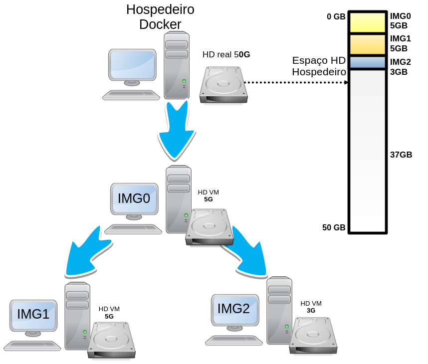
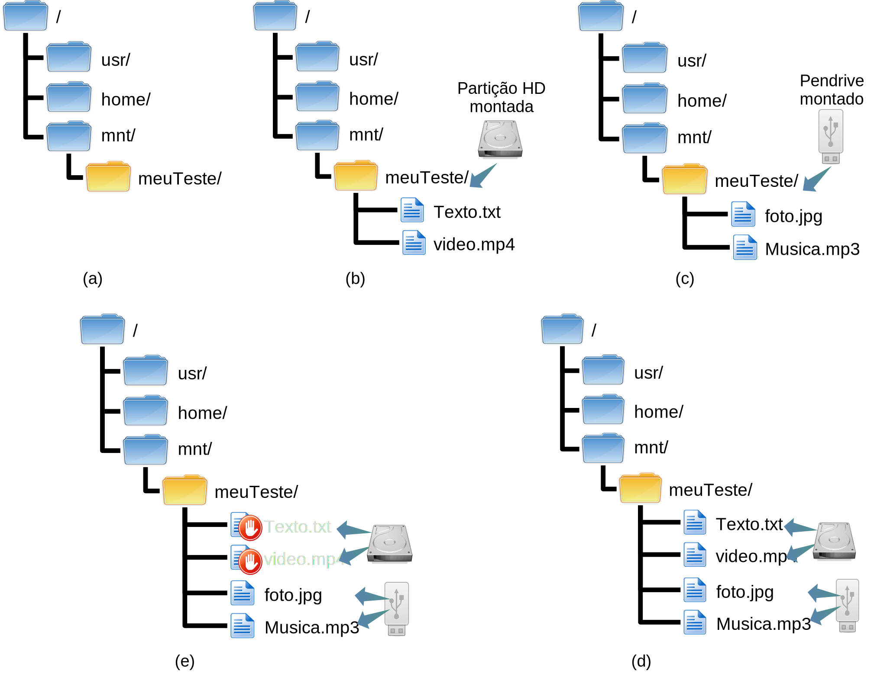
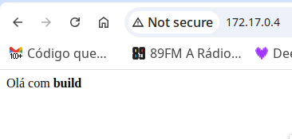
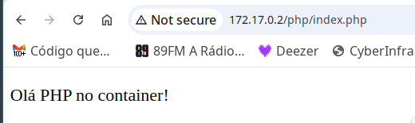

{#fig:virtualBox}
{#fig:virtualBox}Para iniciar os trabalhos com o Docker, é bom primeiro verificar se o mesmo está devidamente instalado.
Isso pode ser feito de várias formas, mas vamos fazer verificando a versão do Docker instalado, com o seguinte comando:
$ docker --version
Docker version 27.0.3, build 7d4bcd863a
Caso o comando não exista, será necessário instalar o Docker em seu sistema. Nenhuma instalação será abordada aqui neste material, recomenda-se buscar informações a respeito de como proceder tal instalação no sítio oficial do Docker, já que a instalação pode variar de sistema para sistema.
::: note No caso do Linux veja como instalar em https://docs.docker.com/desktop/install/linux-install/. :::
Além do comando docker --version, é comum executar os comandos:
docker version, que apresenta mais informações do que o comando que foi digitado anteriormente;docker info, que traz mais informações ainda, informações a respeito do cliente, servidor, etc.Para ver se o servidor está em execução em sistemas Linux, é possível utilizar o comando ps, tal como:
$ ps ax | grep dockerd
791 ? Ssl 0:00 /usr/bin/dockerd -H fd:// --containerd=/run/containerd/containerd.sock
8748 pts/0 S+ 0:00 grep dockerd
Neste exemplo são retornados dois processos com o termo dockerd, sendo esses:
grep, utilizado para filtrar as saídas no comando ps (esse não interessa)./usr/bin/dockerd), ou seja, era o que estávamos procurando e se ele não estivesse ai, algo estaria errado com a execução do Docker neste sistema.::: note Lembrando que os números dos processos provavelmente vão mudar em cada sistema, já que são aleatórios. :::
Bem, mas só executamos esses comandos para ter certeza que o Docker está instalado - isso não é obrigatório. Agora vamos para o próximo passo, que é realmente utilizar o Docker para fazer alguma coisa.
run)Vamos executar um container Docker simples para efetivamente verificar se tudo está funcionando no Docker.
Para isso, vamos utilizar o comando docker run. Nesta primeira execução será iniciada uma imagem do Ubuntu Linux, com interação de um shell, para este sistema. Para tanto vamos executar o seguinte comando:
$ docker run -i -t ubuntu /bin/bash
Unable to find image 'ubuntu:latest' locally
latest: Pulling from library/ubuntu
9c704ecd0c69: Pull complete
Digest: sha256:2e863c44b718727c860746568e1d54afd13b2fa71b160f5cd9058fc436217b30
Status: Downloaded newer image for ubuntu:latest
root@ebfc7d73bf3a:/#
::: important
Pode ser necessário utilizar o comando sudo para executar o docker. Como exemplo, o comando anterior ficaria sudo docker run -i -t ubuntu /bin/bash.
:::
O comando anterior, bem como sua saída, apresentam várias “coisas” interessantes do Docker. Assim, vamos dissecar primeiro o comando executado (docker run -i -t ubuntu /bin/bash), vendo as seguintes opções e parâmetros:
-i, mantém a saída padrão (STDIN) do container no console do hospedeiro, ou seja, todas as saídas geradas pelo container serão apresentadas na tela na qual o comando foi digitado;-t, informa para o Docker associar um console virtual (pseudo-tty) para o container criado. Isso vai permitir interagir como container, através da execução de comandos;ubuntu, é o nome da imagem utilizada para criar o container. Outras imagens poderiam ser utilizadas, essas podem estar disponível localmente ou na Internet, por exemplo no Docker Hub. Depois, no [Capítulo @sec:imagens], vamos ver melhor como listar e utilizar essas imagens./bin/bash, esse é o comando a ser executado no container que está sendo criado. Mais especificamente, neste exemplo, estamos pedindo para o container executar o bash, que é normalmente o shell padrão de ambientes Linux. Neste caso, como esperamos interagir com o container, via comandos (dadas as opções -i e -t), vamos fazer isso via console. Ou seja, isso vai permitir interagir com o container através de um console texto, no qual será possível digitar comandos no container.bash do containerBem, com o resultado do comando anterior, estamos dentro de um container, pronto para interagir com ele através do prompt de comando.
::: important Os comandos apresentados a seguir podem variar de container para container dependendo da distribuição e da versão da mesma, bem como das configurações já realizadas em um container pré-configurado. Tais comandos são do Linux e não do Docker. :::
Então vamos por exemplo executar alguns comandos Linux neste container.
Podemos utilizar o comando hostname do Linux, para ver o nome do host/container.
root@ebfc7d73bf3a:/# hostname
ebfc7d73bf3a
A saída anterior, mostra que o nome do host é ebfc7d73bf3a.
::: important Neste exemplo o nome ebfc7d73bf3a é o ID do container, ou seja, é um valor que identifica o container de forma única dentro do Docker. :::
Atualmente, para verificar as configurações de rede do Linux é comum utilizar o comando ip. Todavia se tentarmos utilizar o comando ip neste container, o resultado será o seguinte:
root@ebfc7d73bf3a:/# ip
bash: ip: command not found
Ou seja, o comando ip não está instalado por padrão neste container, mas é possível instalar pacotes neste container, conforme é abordado a seguir.
::: note
Neste caso, seria possível ver o IP do container sem instalar o comando ip, isso pode ser feito com o comando hostname -I.
:::
Para atualizar o Ubuntu do container basta fazer um atp update, tal como seria em um computador normal (sem container):
root@ebfc7d73bf3a:/# apt update
Get:1 http://archive.ubuntu.com/ubuntu noble InRelease [256 kB]
...
Reading state information... Done
2 packages can be upgraded. Run 'apt list --upgradable' to see them.
Agora com o apt atualizado, é possível instalar o comando ip, no caso ele é disponibilizado através do pacotes iproute2, então vamos instalar esse:
root@ebfc7d73bf3a:/# apt install iproute2
Reading package lists... Done
...
Do you want to continue? [Y/n]
Get:1 http://archive.ubuntu.com/ubuntu noble/main amd64 libelf1t64 amd64 0.190-1.1build4 [57.6 kB]
...
Processing triggers for libc-bin (2.39-0ubuntu8.2) ...
A saída anterior mostra que o iproute2 foi instalado com sucesso.
::: note
Se o container não for derivado do Debian, como é o caso do Ubuntu, pode ser que o comando apt não exista, ai será necessário utilizar outras formas para instalar pacotes - isso pode variar de distribuição para distribuição.
:::
ip:Com o pacote iproute2 instalado, agora é possível utilizar o comando ip, tal como:
root@ebfc7d73bf3a:/# ip a
1: lo: <LOOPBACK,UP,LOWER_UP> mtu 65536 qdisc noqueue state UNKNOWN group default qlen 1000
link/loopback 00:00:00:00:00:00 brd 00:00:00:00:00:00
inet 127.0.0.1/8 scope host lo
valid_lft forever preferred_lft forever
inet6 ::1/128 scope host
valid_lft forever preferred_lft forever
6: eth0@if7: <BROADCAST,MULTICAST,UP,LOWER_UP> mtu 1500 qdisc noqueue state UP group default
link/ether 02:42:ac:11:00:02 brd ff:ff:ff:ff:ff:ff link-netnsid 0
inet 172.17.0.2/16 brd 172.17.255.255 scope global eth0
valid_lft forever preferred_lft forever
A saída anterior, mostra que no container existem as seguintes interfaces de rede:
lo, com o IP 127.0.0.1/8;eth0, com o IP 172.17.0.2/16.Daria para explorar mais informações, tal como a rota padrão através do comando ip route.
Para verificar os processos em execução no container, podemos utilizar o comando ps, tal como:
root@ebfc7d73bf3a:/# ps ax
PID TTY STAT TIME COMMAND
1 pts/0 Ss 0:00 /bin/bash
339 pts/0 R+ 0:00 ps ax
A saída do comando anterior mostra que há dois processos no container em questão. Sendo esses representados pelos seguintes PIDs:
1, para o processo bash, que é o shell que pedimos para executar no comando que criou o container;339, para o processo ps, que é o último comando que foi executado.Daria para ficar interagindo com o container, tal como em um sistema normal, mas vamos parar por aqui.
exit)Para sair do console do container, basta digitar exit, tal como:
root@ebfc7d73bf3a:/# exit
exit
$
Conforme a saída do comando anterior, veja que saímos do container ebfc7d73bf3a, no qual estávamos com o usuário root, e no exemplo, voltamos para o host fielDell, com o usuário luiz.
Bem, mas o que aconteceu com o container que estava em execução?
A resposta é: ele parou de ser executado!
Isso acontece, pois o Docker iniciou o container para executar o comando /bin/bash, e quando digitamos exit, o comando /bin/bash para de ser executado e assim o container inteiro para.
Uma tarefa extremamente comum é listar os containers que estão em execução, bem como os que estão parados. Veja como fazer isso a seguir.
ps -a)Para ver os containers parados, execute o comando docker ps -a:
$ docker ps -a
CONTAINER ID IMAGE COMMAND CREATED STATUS PORTS NAMES
ebfc7d73bf3a ubuntu "/bin/bash" About an hour ago Exited (0) 47 minutes ago strange_jang
06d326091537 luizarthur/cyberinfra:hostDeb11 "/gns3/init.sh bash" 6 weeks ago Exited (137) 6 weeks ago admiring_burnell
::: note A saída infelizmente pode extrapolar o tamanho da página, e por isso as colunas ficam em posições ruins de mostrar o resultado - isso também pode acontecer em um terminal de computador. :::
No exemplo da saída anterior temos dois containers parados, sendo esses:
ebfc7d73bf3a, que tem o nome strange_jang, derivado de uma imagem chamada ubuntu, sendo esse o container deste exemplo.06d326091537, com o nome admiring_burnell, criado da imagem luizarthur/cyberinfra:hostDeb11.Note ainda na saída anterior, que dá para ver os comandos de iniciação desses containers (COMMAND), bem como algumas informações de tempo (CREATED), estado do container (STATUS), etc.
A princípio o nome do container é gerado automaticamente, mas é possível informar um nome para o container utilizando a opção --name. Os nomes devem ser únicos. Assim, na hora de criar o container, informe o nome deste container, tal como:
$ docker run --name meuContainer -i -t ubuntu /bin/bash
No exemplo anterior seria criado um container chamado meuContainer.
ps)Para listar containers em execução, basta executar o comando docker ps, ou seja, é apenas tirar o -a do comando anterior. Veja o exemplo:
$ docker ps
CONTAINER ID IMAGE COMMAND CREATED STATUS PORTS NAMES
No exemplo da saída anterior, não há nenhum container em execução.
::: important
Note que o comando ps dentro de sistemas Unix-Like, apresentam os processos em execução. Já o ps passado como parâmetro para o comando docker, apresenta containers em execução ou parados. Ou seja, eles não são equivalentes.
:::
Para listagens, há duas opções úteis:
-n seguida de um número inteiro, mostrará os últimos x containers (não importa o estado do container - em execução ou parado), sendo que x é o número digitado na frente de -n;-l, mostrará apenas o último container (não importa o estado).As opções -n e -l são importantes, pois podem haver vários containers na lista retornada pelo comando ps. Assim tais opções vão filtrar e mostrar os mais recentes, que normalmente são os que estamos trabalhando no momento.
start)É possível iniciar um container que está parado, isso é feito com o comando docker start seguido do ID do container ou nome.
Então vamos iniciar o container que criamos anteriormente, através de seu ID (visto na listagem dos containers parados):
$ docker start ebfc7d73bf3a
ebfc7d73bf3a
Feito isso, agora se listarmos os containers em execução, teremos o seguinte resultado:
$ docker ps
CONTAINER ID IMAGE COMMAND CREATED STATUS PORTS NAMES
ebfc7d73bf3a ubuntu "/bin/bash" 2 hours ago Up 3 seconds strange_jang
Ou seja, o container ebfc7d73bf3a, saiu de parado para em execução (Up).
attach)Bem, mas e agora? Como interagir com o console deste container que acabamos de ligar novamente, no exemplo anterior? Para isso é possível utilizar a opção attach, tal como:
$ docker attach ebfc7d73bf3a
root@ebfc7d73bf3a:/#
Assim estamos novamente no console do container que voltou à execução pela opção start.
::: note
Atenção, para sair de um console de um container, sem parar o processo, é possível pressionando as teclas Ctrl+p seguido de Ctrl+q.
Então, pressione a tecla ctrl e a tecla p. Depois, sem soltar o ctrl, solte o p e pressione q.
:::
stop)Para parar um container que está em execução podemos utilizar a opção stop. Então, normalmente você vai listar os containers em execução com o comando docker ps, vai pegar o ID ou nome deste e executar o comando docker, com a opção stop, tal como:
$ docker ps
CONTAINER ID IMAGE COMMAND CREATED STATUS PORTS NAMES
ebfc7d73bf3a ubuntu "/bin/bash" 2 hours ago Up 3 seconds strange_jang
Neste caso vamos utilizar ID ebfc7d73bf3a.
$ docker stop ebfc7d73bf3a
ebfc7d73bf3a
$ docker ps
CONTAINER ID IMAGE COMMAND CREATED STATUS PORTS NAMES
Como observa-se na última saída, o container ebfc7d73bf3a não está mais em execução. É claro que os passos de verificação apresentados aqui, não são obrigatórios, mas é comum executá-los no dia a dia, para ter certeza do que estamos fazendo.
A opção stop do Docker, envia um sinal SIGTERM para o container. Todavia é possível enviar o sinal SIGKILL, com a opção kill.
Desta forma, com o stop, o container é fechado de forma elegante, encerrando o processo corretamente. Já com o kill, o processo do container é fechado abruptamente, por exemplo, sem salvar conteúdos em disco - se for o caso. Então, o kill só deve ser utilizado em casos extremos, nos quais o container pode comprometer a integridade do sistema como um todo, ou por estar travado (não responde de forma alguma).
::: note
As opções stop e kill do Docker fazem mais sentido para containers que rodam processos em plano de fundo, no estilo daemon (veremos esse a seguir). Se o container for executado de forma interativa, utilizando por exemplo o /bin/bash, é possível pará-lo com o exit, via console.
:::
-d)Da forma que utilizamos container até o momento, eles ficam bastante parecidos com VMs completas, utilizados no VirtualBox ou VMWare. Entretanto, na prática, não se espera que os containers funcionem assim, de forma interativa - mesmo que eles possam ser utilizados desta forma.
Atualmente, esperá-se que os containers executem pequenas partes de um serviço maior, no estilo microsserviço. Por exemplo, um container pode executar um servidor de banco de dados, outro executa um serviço Web, tal como JavaScript, outro PHP e assim por diante. Lembre-se que o Docker, ao contrário das VMs completas, compartilham recursos do computador hospedeiro, então os containers não consomem recursos em demasia se comparados às VMs completas e por isso, são uma boa opção para segmentar serviços, isolando ambientes diferentes e assim fornecendo mais segurança, escalabilidade, etc.
Dito isso, é comum executar containers sem interagir diretamente com eles. Desta forma, o administrador basicamente vai configurar qual serviço ou serviços o container deve executar quando for iniciado, e depois, só vai interagir com os serviços providos pelo container - não vai ficar interagindo com o container via shell. Então, normalmente será necessário “daemonizar” os serviços que o container vai executar, ou seja, é necessário deixar os processos executados pelo container rodando em plano de fundo (backgroud), já que simplesmente não haverá uma tela por padrão esperando a interação do usuário. Em outras palavras, a ideia é colocar serviço/processo, bem como o container como daemon.
::: note Normalmente serviços de rede são executados em servidores como daemons, tais como: HTTP, SSH, SMB, NFS, etc. :::
Para iniciar processos em backgroud no Docker, utiliza-se a opção -d. Uma curiosidade é que o -d significa detach e não daemon, mas ela serve para deixar o processo como se fosse um daemon. Desta forma, com a opção detach, espera-se que não exista um console acoplado para interação, tal como:
$ docker run --name cont1 -d ubuntu /bin/sh -c "while true; do echo Olá mundo; date; sleep 10; done"
7b4b0a3be0b58fdfa7f8e0e4674bc38a400c564ec969a853ae6ee0add9796010
No comando anterior, estamos basicamente informando o seguinte para o Docker:
run: inicie o container;--name cont1: atribuir o nome cont1 ao container;-d: ele vai ser executado em plano de fundo (no estilo daemon);ubuntu: utiliza a imagem do Ubuntu;/bin/sh: vai executar um script.Em resumo, iniciamos um container para executar um shell script que fica apresentando na saída do container o seguinte: texto “Olá mundo”, seguido da data/hora do container, repedindo isso a cada 10 segundos. Tudo isso foi feito através dos comandos que estão na frente de /bin/sh -c.
::: note
Note que o comando passado para esse container é o /bin/sh, tudo que vêm após tal comando (-c "while true; do echo Olá...), são opções e parâmetros do sh e não do comando docker.
:::
Se tudo correr bem, após iniciar o container utilizando a opção -d, não haverá nenhuma saída do container na tela do computador hospedeiro. Desta forma, para ver o status do container é possível utilizar o ps, tal como:
$ docker ps
CONTAINER ID IMAGE COMMAND CREATED STATUS PORTS NAMES
7b4b0a3be0b5 ubuntu "/bin/sh -c 'while t…" 9 seconds ago Up 9 seconds cont1
O comando anterior, mostra pelo status, que o container está em execução, à 9 segundos (Up 9 seconds). Todavia, o status não mostra o que está acontecendo dentro do container, para ter mais detalhes vamos ver o comando logs na seção a seguir.
logs)Com o container sendo executado tal como um daemon, ou seja, em plano de fundo, o resultado da execução do container não aparecerá por padrão na tela do hospedeiro.
Todavia, é possível utilizar o comando docker logs para ver a saída de containers Docker que estão sendo executados como daemons.
::: important
O docker logs apenas apresenta a saída do container, ele não permite a interação com o mesmo (ex. digitar comandos no container).
:::
Desta forma, para ver o que está acontecendo no terminal do container do exemplo anterior, que está em background, podemos executar o seguinte comando:
$ docker logs cont1
Olá mundo
Tue Jul 16 18:56:51 UTC 2024
Olá mundo
Tue Jul 16 18:57:01 UTC 2024
Olá mundo
Tue Jul 16 18:57:11 UTC 2024
Olá mundo
Tue Jul 16 18:57:21 UTC 2024
Olá mundo
Tue Jul 16 18:57:31 UTC 2024
Olá mundo
Tue Jul 16 18:57:41 UTC 2024
A saída anterior mostra que o script executado no container do exemplo anterior, está funcionando corretamente, pois está apresentando na tela o texto “Olá mundo”, seguido da data/hora do container, a cada 10 segundos, tal como programado no script.
O comando docker logs, sem nenhuma opção, vai apresentar uma prévia da saída do container e parar. Caso seja necessário monitorar as saídas do container de forma continua, dá para utilizar a opção -f. Desta forma, as saídas do container ficam aparecendo na tela do hospedeiro, até o administrador pressionar Ctrl+c, para sair. Então para ter esse resultado o comando anterior ficaria da seguinte forma:
$ docker logs -f cont1
Olá mundo
Tue Jul 16 18:56:51 UTC 2024
Olá mundo
Tue Jul 16 18:57:01 UTC 2024
Olá mundo
Tue Jul 16 18:57:11 UTC 2024
...
O comando docker logs -f é muito utilizado no dia a dia, pois permite o monitoramento continuo do container que está sendo executado no estilo daemon.
::: note
A opção docker logs -f é similar ao comando tail -f, utilizada para monitorar arquivos de log de sistemas Unix-Like. Lembre que é utilizado o Ctrl+c para sair desses comandos.
:::
--restart)Os containers podem parar de funcionar por causa de algum erro inesperado e se ele tiver sendo executado em plano de fundo, você provavelmente não verá tal problema.
Então é possível iniciar o container informando, por exemplo, que se algo der errado, ele deve se auto reiniciar e isso é feito com a opção --restart. Desta forma, caso o programa executado pelo container termine normalmente ou termine devido à algum erro, o container vai reiniciar sozinho.
::: important É importante perceber que o container sai do status de “em execução” para “parado”, devido à basicamente duas situações:
Exitem algumas opções para o reinicio automático para containers Docker, sendo as mais comuns:
always: com esta opção, o container sempre será reinicializado, não importa o motivo (terminou normalmente ou por erro). Mesmo se o computador hospedeiro for reinicializado, o Docker vai iniciar novamente o container.unless-stopped: similar ao always, mas neste caso o container não é reinicializado se estiver no estado de “parado” (ex. alguém parou o container com docker stop). Todavia, se o processo do Docker for reinicializado (ex. reinicializaram o computador hospedeiro), o container será religado.on-failure: com esta opção, o container é reinicializado apenas se tiver um erro (exit diferente de zero). Nesta opção ainda dá para determinar o número de vezes que o container vai tentar religar, caso essa quantidade seja atingida ele desiste de religar.Para exemplificar o uso dessas funções do restart, vamos alterar um pouco o script utilizado no cont1 (exemplo anterior). Vamos criar um novo container chamado cont2, que basicamente tem o mesmo script do cont1, só que adicionado um exit 1, após o “Olá mundo” e o resto continua como era antes. O objetivo aqui é simular um erro no script, já que quando o código chegar a linha do exit 1, ele determina que o script deve ser interrompido, e é retornado um 1 para o sistema (que representa um erro). Desta forma, o script nunca vai mostrar a data/hora, tal como fazia antes, já que o exit é executado antes.
A seguir são apresentados exemplos de opções para o uso do restart com esse novo script alterado:
alwaysNo exemplo a seguir é utilizada a opção always do restart, de forma que o container seja reinicializada toda vez que ele for encerrado (por erro ou porque o programa terminou normalmente):
$ docker run --restart=always --name cont2 -d ubuntu /bin/sh -c "while true; do echo Olá mundo; exit 1; date; sleep 10; done"
6a17852229690344c0931d3fdcdd44775a17a79902d53bb70805b2ba43b7bd69
O comando anterior, mostra como utilizar a opção --restart=always. No comando também determinamos que o nome do container é cont2, que este deve ser executado em plano de fundo (-d), é criado a partir da imagem ubuntu, e principalmente está com o script alterado, que é abortado ao chegar no exit.
Assim, vamos utilizar a opção log, para ver a saída deste exemplo:
$ docker logs -f cont2
Olá mundo
Olá mundo
Olá mundo
Olá mundo
Olá mundo
Olá mundo
Olá mundo
Dada a saída anterior, observa-se que o container cont2 apresenta o texto “Olá mundo”, várias vezes, mas nunca a data/hora do sistema. Isso significa que o script é executado até o echo Olá mundo e é abortado. Desta forma, sem a opção restart o container seria encerrado, mas como estamos utilizando a opção --restart=always, o container é reiniciado toda vez que o script é finalizado pelo exit, esse comportamento vai se repetir indefinidamente.
on-failureO exemplo a seguir mostra como é utilizada a opção on-failure do restart. Tal opção só reinicializa o container se o processo for finalizado com um exit maior que zero, ou seja, se o container for finalizado por causa de erros do programa sendo executado. Desta forma, se o programa terminar normalmente, o container não será reinicializado.
Para esse exemplo, foi criado um container chamado cont3, que fora o nome do container, a única diferença do exemplo anterior (cont2) é que foi utilizado a opção --restart=on-failure:3. Sendo que esse :3, na frente da opção, significa que ele só será reinicializado três vezes. Se for utilizado apenas o --restart=on-failure, sem nada na frente (ex. :3), ele será reinicializado de forma indefinida.
$ docker run --restart=on-failure:3 --name cont3 -d ubuntu /bin/sh -c "while true; do echo Olá mundo; exit 1; date; sleep 10; done"
857022977d13473202ce0ac1988a124ff76375dfc1326ff7c5eb4f50b24949c4
Depois de executar o comando para criar o container chamado cont3, vamos ver sua saída com o logs:
$ docker logs -f cont3
Olá mundo
Olá mundo
Olá mundo
Olá mundo
Dada a saída anterior, note que há quatro vezes o texto “Olá mundo”, então o container foi executado pela primeira vez, ai saiu com um exit 1, depois isso aconteceu mais três vezes e o container foi abortado (ficou no estado de parado).
Vamos executar os comandos para verificar o status dos containers criados até aqui, primeiro vamos ver os containers ativos:
$ docker ps
CONTAINER ID IMAGE COMMAND CREATED STATUS PORTS NAMES
6a1785222969 ubuntu "/bin/sh -c 'while t…" About a minute ago Restarting (1) 48 seconds ago cont2
7b4b0a3be0b5 ubuntu "/bin/sh -c 'while t…" 40 hours ago Up 27 hours cont1
Note que estão ativos os containers cont1 e cont2, ou seja, o cont2 está em execução, mesmo que o seu processo esteja retornando erro em toda execução. Perceba que não há o container cont3 na saída anterior, então vamos ver se esse se encontra parado com o comando docker ps -l, já que este foi o último container que trabalhamos:
$ docker ps -l
CONTAINER ID IMAGE COMMAND CREATED STATUS PORTS NAMES
857022977d13 ubuntu "/bin/sh -c 'while t…" 58 seconds ago Exited (1) 56 seconds ago cont3
A saída anterior, demonstra mais uma vez que a opção --restart=on-failure:3 foi executada com sucesso, já que o cont3 foi abortado/parado, depois de algumas execuções.
::: note
No comando anterior utilizamos docker ps -l para ver apenas o último container que foi abortado pelo Docker, pois como não há outros containers sabíamos que provavelmente o cont3 era o último container que foi abortado.
:::
rm)Como descrito até aqui, uma vez que você execute um container, ele vai estar na lista de containers ativos ou parados, tal como pode ser visto a seguir, com os container que trabalhamos neste material:
$ docker ps -a
CONTAINER ID IMAGE COMMAND CREATED STATUS PORTS NAMES
857022977d13 ubuntu "/bin/sh -c 'while t…" 6 hours ago Exited (1) 6 hours ago cont3
6a1785222969 ubuntu "/bin/sh -c 'while t…" 6 hours ago Restarting (1) 55 seconds ago cont2
7b4b0a3be0b5 ubuntu "/bin/sh -c 'while t…" 46 hours ago Up 33 hours cont1
ebfc7d73bf3a ubuntu "/bin/bash" 2 days ago Exited (137) 47 hours ago strange_jang
06d326091537 luizarthur/cyberinfra:hostDeb11 "/gns3/init.sh bash" 7 weeks ago Exited (137) 6 weeks ago admiring_burnell
Todavia, em alguns momentos vão haver containers que não vamos mais utilizar, como por exemplo containers de testes ou defasados. Assim, é possível remover esses containers utilizando o comando rm do Docker.
Por exemplo, vamos remover o container chamado cont3, para isso podemos utilizar o seguinte comando:
$ docker rm cont3
cont3
O resultado do comando será apenas uma saída com o nome do container, neste caso foi cont3. Neste exemplo anterior, utilizamos o nome do container para removê-lo, mas é possível utilizar o ID, vamos remover o primeiro container que criamos utilizando o ID dele, tal como:
$ docker rm ebfc7d73bf3a
ebfc7d73bf3a
Depois de remover o cont3, vamos tentar remover o cont2, entretanto o resultado para essa deleção será o seguinte:
$ docker rm cont2
Error response from daemon: cannot remove container "/cont2": container is restarting: stop the container before removing or force remove
A saída anterior informa que o cont2 está configurado para reiniciar, assim é necessário primeiro pará-lo e depois removê-lo, tal como:
$ docker stop cont2
cont2
$ docker rm cont2
cont2
Agora que os containers foram removidos, é possível constatar tal tarefa utilizando o comando docker ps -a:
$ docker ps -a
CONTAINER ID IMAGE COMMAND CREATED STATUS PORTS NAMES
7b4b0a3be0b5 ubuntu "/bin/sh -c 'while t…" 47 hours ago Up 33 hours cont1
06d326091537 luizarthur/cyberinfra:hostDeb11 "/gns3/init.sh bash" 7 weeks ago Exited (137) 6 weeks ago admiring_burnell
A saída anterior mostra que foram removidos: o primeiro container que criamos; cont2 e cont3, ou seja, chegamos no resultado que queríamos para esses exemplos de remoção de containers.
Em alguns casos especiais é necessário remover todos os containers, mas não há um comando específico do Docker para tal tarefa. Assim, é possível combinar comandos, no estilo shell script para conseguir tal resultado, neste caso um possível comando no Linux seria:
$ docker rm -f $(docker ps -aq)
No comando anterior, foram combinados os comandos docker ps -aq, que gera uma lista de ID (-q) de containers do Docker, depois cada item desta lista é executada pelo comando docker rm, é claro que esse comando deve ser utilizado com cautela, pois apaga todos os containers do sistema.
Também dá para iniciar um container com a opção --rm, desta forma o container é executado uma única vez, e quando o programa que ele está executando terminar, o container é imediatamente removido do sistema. Um exemplo de comando utilizando o --rm é:
$ docker run --rm --name cont5 -d ubuntu /bin/sh -c "echo Olá mundo"
060e1626cd5e460ff6a9270da00ab350b9fbaea5d73841d5c50bfc6a5067fc09
Utilize o comando docker ps -l e você notará que o container cont5, criando anteriormente, não aparecerá na listagem de containers do sistema.
A opção --rm é muito útil durante a criação de containers de teste, pois assim que o container for encerrado o mesmo será removido e não vai ficar ocupando recursos dentro do sistema hospedeiro.
-l)Como uma das ideias principais de containers é utilizar vários desses, cada um provendo determinados serviços, é natural que exista algum tipo de recurso mínimo para ajudar à organizar os containers.
Bem, um desses recursos são os rótulos (labels), que servem como metadados que podem ajudar a identificar os containers, por exemplo, quais containers são de uma dada organização, ou quais containers estão relacionados a um dado serviço. Então para utilizar os labels no Docker basta utilizar a opção -l. Veja o exemplo a seguir:
$ docker run --rm -l teste -d ubuntu /bin/sh -c "while true; do echo Olá mundo; date; sleep 10; done"
937619dfdf891ef84a98ac94c3d60d1edae2cd0cc596ba8459b2afeaaa815d8b
$ docker run --rm -l teste -d ubuntu /bin/sh -c "while true; do echo Olá mundo; date; sleep 10; done"
Anteriormente são criados dois containers, esses basicamente executam o primeiro script que utilizamos de exemplo, não foram passados nomes para esses, utilizam a opção --rm para serem removidos quando forem desligados e principalmente para estes exemplo, utilizam uma label chamada “teste” (-l teste).
Desta forma, agora é possível utilizar tal label para localizar os containers, tal como:
$ docker ps -a -f label=teste
CONTAINER ID IMAGE COMMAND CREATED STATUS PORTS NAMES
496d3dc5d3dd ubuntu "/bin/sh -c 'while t…" 57 seconds ago Up 56 seconds cranky_hodgkin
937619dfdf89 ubuntu "/bin/sh -c 'while t…" About a minute ago Up About a minute goofy_agnesi
Graças a esse rótulo, também é possível criar comandos mais complexos, tal como desligar todas os containers que tenham a label “teste”. O comando a seguir realiza essa tarefa:
$ docker stop $(docker ps -q --filter "label=teste")
496d3dc5d3dd
937619dfdf89
Como foi utilizada a opção --rm, esses container também foram removidos da lista de containers do sistema.
::: note
É comum utilizar labels com mais de uma palavra separada por =, tal como desenvolvimento=maria.
:::
create)Para criar um container é possível utilizar o comando run, tal como já fizemos no início deste capítulo, ou utilizar o comando create.
A grande diferença é que o create só cria o container e não coloca ele em execução. Então, após criar tal container é bem provável que o administrador execute o comando start. Desta forma, ao executar o comando run, ele internamente está executando um create seguido do start.
O comando a seguir é um exemplo do uso do comando create para criar um container chamado cont6:
$ docker create --name cont6 ubuntu /bin/sh -c "while true; do echo Olá mundo; date; sleep 10; done"
Após executar o comando anterior, o status do container será de criado (Created), veja:
$ docker ps -l
CONTAINER ID IMAGE COMMAND CREATED STATUS PORTS NAMES
931b22bca56f ubuntu "/bin/sh -c 'while t…" 10 seconds ago Created cont6
Todavia, o container do exemplo anterior, foi criado mas não está em execução, ou seja, está parado. Assim, para mudar o seu estado para em execução, é necessário executar um start, tal como:
$ docker start cont6
cont6
Desta forma o container irá para o estado de “executando” (Up), tal como apresentado na saída a seguir do comando docker ps -l, deste exemplo:
$ docker ps -l
CONTAINER ID IMAGE COMMAND CREATED STATUS PORTS NAMES
931b22bca56f ubuntu "/bin/sh -c 'while t…" 2 minutes ago Up 5 seconds cont6
É possível utilizar o create e start do Docker para criar containers, entretanto se for para criar o container e imediatamente colocá-lo em execução, é mais fácil/prático utilizar o comando run.
::: note
Após criar um container com o comando create do Docker, não é possível utilizar o comando run, para executar um container com o mesmo nome do container criado. Neste caso, será reportado um erro dizendo que o container já existe.
:::
inspect)Comando inspect do Docker, permite verificar a configuração completa do container. O inspect, mostrará as mais diversas informações do container, tal como: nome, configurações de rede, armazenamento, estado, imagem, comando, etc. Isso pode ser muito útil, por exemplo, para a depuração de erros, identificação ou criação de containers similares.
Para inspecionar um container utilizando o inspect é necessário apenas executar docker inspect seguido do nome ou ID do container, tal como:
$ docker inspect cont6
[
{
"Id": "931b22bca56f04add7b383e12a862cd3cd9ef1c582cb8136e5b5afb0a8f4b935",
"Created": "2024-07-19T14:56:22.519662813Z",
"Path": "/bin/sh",
"Args": [
"-c",
"while true; do echo Olá mundo; date; sleep 10; done"
],
"State": {
"Status": "running",
"Running": true,
"Paused": false,
"Restarting": false,
...
},
"Image": "sha256:35a88802559dd2077e584394471ddaa1a2c5bfd16893b829ea57619301eb3908",
"ResolvConfPath": "/var/lib/docker/containers/931b22bca56f04add7b383e12a862cd3cd9ef1c582cb8136e5b5afb0a8f4b935/resolv.conf",
"HostnamePath": "/var/lib/docker/containers/931b22bca56f04add7b383e12a862cd3cd9ef1c582cb8136e5b5afb0a8f4b935/hostname",
...
"Name": "/cont6",
"RestartCount": 0,
"Driver": "overlay2",
"Platform": "linux",
...
"NetworkMode": "bridge",
"PortBindings": {},
...
"Config": {
"Hostname": "931b22bca56f",
"Domainname": "",
"User": "",
"AttachStdin": false,
"AttachStdout": true,
"AttachStderr": true,
"Tty": false,
"OpenStdin": false,
"StdinOnce": false,
"Env": [
"PATH=/usr/local/sbin:/usr/local/bin:/usr/sbin:/usr/bin:/sbin:/bin"
],
"Cmd": [
"/bin/sh",
"-c",
"while true; do echo Olá mundo; date; sleep 10; done"
],
"Image": "ubuntu",
"Volumes": null,
"WorkingDir": "",
"Entrypoint": null,
"OnBuild": null,
"Labels": {
"org.opencontainers.image.ref.name": "ubuntu",
"org.opencontainers.image.version": "24.04"
}
},
"NetworkSettings": {
"Bridge": "",
...
"Gateway": "172.17.0.1",
"GlobalIPv6Address": "",
"GlobalIPv6PrefixLen": 0,
"IPAddress": "172.17.0.4",
"IPPrefixLen": 16,
"IPv6Gateway": "",
"MacAddress": "02:42:ac:11:00:04",
...
}
}
}
]
Como é possível ver na saída anterior, que inclusive teve partes omitidas, o inspect traz muitas informações a respeito do container. Neste exemplo, verificamos as informações do cont6, que foi criando na seção anterior. Por exemplo, no final da saída, é possível ver muitas configurações de rede do container, tais como: IP, gateway padrão, endereço MAC, etc.
Todas as informações do inspect são apresentadas no formato JSON, o que facilita a automação de extração dessas informações, inclusive utilizando-se scripts. Na verdade o próprio Docker fornece meios para filtrar as informações que podem ser obtidas do inspect (a quantidade de informações pode atrapalhar a visão e análise em determinadas tarefas). Por exemplo, para obter o endereço IP do container, é possível executar o seguinte comando:
$ docker inspect --format '' cont6
172.17.0.4
Isso mostra que o cont6 tem o IP 172.17.0.4. Com o comando anterior, note que foi utilizado docker inspect, com a opção --format, seguido da estrutura JSON que armazena a informação que estamos querendo, e no final o nome ou ID do container. Para encontrar essa estrutura você deve dar realizar o inspect e analisar a hierarquia do JSON, no exemplo anterior o IPAddress está sob NetworkSettings, assim ficou .NetworkSettings.IPAddress.
Vamos obter do container cont6 qual é o comando que ele está executando, tal informação está em Path (ver primeira saída que geramos do inspect). Assim a busca por tal informação seria o seguinte comando:
$ docker inspect --format '' cont6
/bin/sh
Repare na saída do inspect apresentada no início da seção, que basicamente a mesma informação a respeito do comando executado, também está em Cmd, que está dentro de Config, ai a busca seria com o seguinte comando:
$ docker inspect --format '' cont6
[/bin/sh -c while true; do echo Olá mundo; date; sleep 10; done]
Também é possível pedir para o inspect retornar mais de uma informação na consulta, bem como fazer isso para mais de um container, tal como:
$ docker inspect --format ' ' cont1 cont4
/cont1 exited ubuntu
/cont4 exited ubuntu
Na saída anterior, o inspect foi instruído para buscar nos containers cont1 e cont4, as seguintes informações:
Novamente, este tipo de busca por informações específicas a respeito de containers, pode ser extremamente útil no dia a dia do administrador de sistemas, em processos como a criação de telas que mostram o status dos sistemas para identificação de falhas, etc. Então, entender o inspect e como utilizar seus filtros é muito importante, principalmente em ambientes com diversos containers.
Neste capítulo foram apresentados os comandos básicos para a criação e gerenciamento de containers Docker. Então, este capítulo abordou como realizar tarefas simples, como: criar containers, listar, parar/executar, remover, inspecionar, etc. Lembrando que apesar dessas tarefas serem rotineiras, conhecer bem como realizá-las é fundamental para o bom funcionamento do sistema.
Todavia ainda não aprendemos como trabalhar com as imagens Dockers, que são a base para a criação dos containers, isso será feito no [Capítulo @sec:imagens]. Depois disso o [Capítulo @sec:confAvancadas], abordará configurações e gerenciamento de containers para tarefas mais avançadas.
No capítulo anterior, foi apresentado o conceito de container, que é onde os aplicativos/serviços que estão sendo providos via Docker efetivamente são executados. Todavia, já no [Capítulo @sec:containers] foi citado que o container é criado utilizando-se imagens. Por exemplo, no comando: “docker run -i -t ubuntu /bin/bash”, o parâmetro “ubuntu” representa a imagem que serve de base para a criação do container Docker.
Assim, neste capítulo, vamos entender o que é uma imagem, como ela é utilizada pelo container, quais são as vantagens do uso das imagens Docker, bem como criar e gerenciar imagens Docker.
Em resumo, uma imagem Docker, nada mais é do que uma camada de sistema de arquivos, que pode ser empilhada uma sobre a outra. Ou seja, inicialmente podemos pensar na imagem Docker, como sendo o sistema de arquivos que utilizaremos dentro do container Docker, tal como uma imagem ou HD virtual de VM completa (ex. VM do VirtualBox ou VMWare). Entretanto, é preciso ter em mente que há uma grande diferença entre uma imagem Docker e uma imagem de VM completa.
Por exemplo, imagine que criamos uma VM completa, utilizando VirtualBox, nesta VM instalamos o Arch Linux para ser o SO (Sistema Operacional), vamos chamar essa VM de VM0, e tal VM servirá de base para a criação de duas outras VMs. Desta forma, clonamos duas vezes a VM0 e criamos agora a VM1 e VM2 (ver [@fig:virtualBox]). Sendo que, na VM1 instalaremos o MariaDB para ser nosso banco de dados. Já na VM2, instalaremos o HTTP Apache.
Neste exemplo anterior, utilizando virtualização completa (full virtualization), perceba que agora temos três VMs e cada uma tem um HD virtual independente, no qual está instalado o sistema de arquivo, que é a base do Arch Linux. Tais HDs virtuais, na verdade, são arquivos do computador hospedeiro, esses arquivos normalmente têm alguns gigabytes de tamanho. Continuando o exemplo, vamos supor que o HD da VM0 tem 5GB, ai clonamos ele para criar a VM1 que por ser um clone da VM0 já tem 5GB, somado a mais 5GB do MariaDB, o que totaliza um uso de 10GB do HD virtual. Já para VM2, temos os 5GB iniciais do Arch (que já veio de “herança”) e vamos imaginar que foram instalados e armazenados mais uns 3GB de dados, então teremos o HD virtual da VM2 com 8GB. Assim sendo, neste exemplo temos três HDs virtuais com 5GB, 10GB e 8GB, o que totaliza 23GB que são consumidos por esses HDs virtuais do HD real da máquina hospedeira, tal como ilustrado na [@fig:virtualBox]. Concluindo esse exemplo, em um sistema de virtualização completa, cada VM tem um HD completo e isolado, não importa se isso veio de uma cópia/clone de outra VM, a nova VM será um sistema único ocupando os recursos do hospedeiro de forma completa e exclusiva.
::: note Os espaços citados no exemplo para :Arch Linux, MariaDB e Apache HTTP, são meramente ilustrativos, ou seja, não correspondem ao mundo real. :::
{#fig:virtualBox}
Todavia, o conceito de imagem utilizada no Docker é ligeiramente diferente do utilizado normalmente em sistemas de virtualização completa. Desta forma, podemos até pensar nas imagens Docker como se fossem HDs virtuais, mas é mais correto chamar de sistema de arquivos (vamos fazer isso a partir de agora). Assim, é possível criar um sistema de arquivos base e ir acoplando/sobrepondo outros sistemas de arquivos, sendo que neste contexto cada sistema de arquivos vai ser uma nova imagem e então teremos imagens sobrepostas.
Portanto, se pegarmos o mesmo exemplo anterior, só que utilizando imagens Docker, o cenários ficaria da seguinte forma: teríamos a imagem Arch Linux, que chamaremos de IMG0, com 5GB, que serviria de base para a criação da IMG1 e IMG2. Tais imagens são respectivamente equivalentes à VM0, VM1 e VM2. Então, pegamos de base a IMG0, instalamos o MariaDB e criamos a IMG1. Da mesma forma, pegamos a IMG0 de base, instalamos o Apache HTTP e criamos a VM2. Só que fazendo isso com imagens Docker, vai haver uma grande diferença quando comparado ao exemplo anterior com o VirtualBox, pois a IMG0 utiliza 5GB. Na IMG1, com a instalação do MariaDB e dados, tal imagem consumirá apenas 5GB no total e não 10GB (do exemplo com virtualização completa). Por fim, a IMG2 terá somente 3GB no total (e não 8GB), tal como ilustra a [@fig:docker1]. Ou seja, todas as imagens (IMG0, IMG1 e IMG2), consumirão da máquina hospedeira apenas 13GB de espaço em disco e não 23G, como foi feito utilizando o VirtualBox, sendo que isso é possível graças ao conceito de UFS (Union File System).
{#fig:docker1}
Para compreender como as imagens Docker funcionam é necessário entender o conceito de UFS (Union File System), comumente chamado de union mount.
Para falar de union mount é necessário primeiro lembrar que montar (mount) em ambientes Like-Unix, significa disponibilizar em um diretório do sistema, o conteúdo de partições de HDs, SSDs, pendrives, DVDs, etc.
Assim, quando se monta uma partição de um HD, por exemplo no diretório /mnt/meuTeste, o conteúdo desta partição (arquivos e diretórios) aparecerão dentro do diretório /mnt/meuTeste. A [@fig:mount0]-a apresenta o diretório /mnt/meuTeste, sem nenhum conteúdo (diretório vazio) antes da montagem. Já a [@fig:mount0]-b, mostra o diretório /mnt/meuTeste após a montagem da partição de um HD, neste caso tal diretório apresenta conteúdo da partição do HD, que são os arquivos Texto.txt e video.mp4.
É muito importante saber, que se já houvesse algum conteúdo dentro de /mnt/meuTeste, antes da montagem, tal conteúdo ficaria oculto, indisponível e intocável durante todo o tempo que tal diretório permanecer montado.
Desta forma, se enquanto o conteúdo da partição do HD estiver montada em /mnt/meuTeste e posteriormente for montada o conteúdo de um pendrive no mesmo diretório /mnt/meuTeste, tudo que for feito no diretório /mnt/meuTeste afetará somente os arquivos do pendrive, pois o conteúdo da partição do HD estará oculta e protegida pelo processo de montagem.
A [@fig:mount0]-c mostra como ficará aos olhos do usuário o conteúdo do diretório /mnt/meuTeste, quando montando o conteúdo de um pendrive no mesmo diretório onde já estava montada a partição do HD. Já a [@fig:mount0]-d, apresenta que na verdade o conteúdo do HD ainda está associado ao diretório, mas o mesmo não fica acessível enquanto o pendrive permanecer montado.
Todavia, quando o conteúdo da partição do HD volta a aparecer no diretório /mnt/meuTeste, asim que o pendrive for desmontado, como se nada houvesse acontecido.
A diferença do union mount para o mount tradicional, é que o union mount permite montar vários sistemas de arquivos em um ponto de montagem (diretório), deixando o conteúdo de todos esses sistemas de arquivos disponíveis simultaneamente. Ou seja, utilizando o union mount é possível montar, o conteúdo de uma partição de HD no diretório /mnt/meuTeste, mas agora se for montado o conteúdo de um pendrive no mesmo diretório (/mnt/meuTeste), ficará visível e acessível tanto o conteúdo da partição do HD, quanto o conteúdo do pendrive, desta forma o usuário deste sistema poderia trabalhar em ambos dispositivos de armazenamento (pendrive e partição do HD) simultaneamente no mesmo diretório (o que não era possível no mount tradicional). A [@fig:mount0]-e, apresenta esse comportamento do union mount. É importante entender aqui, que caso exista arquivos com o mesmo path, por exemplo /texto.txt na partição do HD e um arquivo /texto.txt no pendrive, ficará acessível apenas o arquivo do dispositivo que foi montado por último.
{#fig:mount0}
::: note
Para realizar um union mount no Linux, é possível utilizar, por exemplo, o unionfs, tal como:
# unionfs -o cow teste1/=RW:teste2/=RO testeTodos/
Neste exemplo, o conteúdo dos diretórios teste1/ e teste2/ são montados dentro de testeTodos/, tudo que for alterado em testeTodos/ será gravado em teste1/, que foi definido com permissão de leitura e gravação (RW).
:::
O Docker suporta várias implementações do mount union, tais como: AUFS, Overlay, devicemapper, BTRFS e ZFS. A implementação utilizada por cada Docker pode ser vista com o comando docker info, na saída procure por Storage Driver, tal como:
$ docker info | grep -i "storage driver"
Storage Driver: overlay2
Na saída anterior, a máquina na qual o comando foi executado, está utilizando o Overlay para tecnologia UFS, ou seja, para realizar union mount.
Agora, sabendo como funciona o UFS ou union mount, podemos dizer que o Docker utiliza tal técnica para agregar imagens e assim economizar espaço em disco, bem como facilitar a distribuições e escalabilidade dessas imagens, o que torna o Docker muito eficiente em comparação com sistemas de virtualização completos (ex. VirtualBox, VMWare, etc).
Desta forma, utilizando UFS, os containers Docker normalmente têm várias camadas de imagens, visando compor o container final de forma mais prática e eficiente. Veja na [@fig:imagensCamadas] como poderia ser composta as camadas de imagens de um container, bem como a descrição dessas no texto a seguir:
vim, iproute2, tcpdump, htop, etc; {#fig:imagensCamadas}
{#fig:imagensCamadas}
Levando em consideração o exemplo da [@fig:imagensCamadas], note que a primeira camada (Camada 1 da [@fig:imagensCamadas]) é o kernel, que na verdade é compartilhado com o sistema hospedeiro. Já a Camada 2. Desta forma, o kernel sempre será compartilhado do hospedeiro com todos os containers, já a distribuição Linux pode ser qualquer uma (a gosto do administrador). Após o kernel e a base da distribuição, normalmente começam a surgir várias camadas, conforme a necessidade/estratégia do administrador do sistema, por exemplo, caso ele queira que determinadas ferramentas estejam em todos os containers derivados, ele pode instalar tais ferramentas neste momento, tal como foi feito na Camada 3. Ainda seguindo o exemplo, a próxima camada (Camada 4) contém a instalação do Apache HTTP, então essa imagem provavelmente é de um servidor HTTP, que poderia por exemplo, receber mais imagens, para formar servidores PHP, JSP, JavaScript, etc. Da mesma forma, o administrador, poderia pegar a partir da Camada 3 e adicionar uma imagem para um servidor de banco de dados, etc. Já no topo das imagens, quando o container for iniciado, vai ficar uma imagem com permissão de leitura e gravação, que será o espaço no qual os arquivos criados ou alterados pelo container serão armazenados, essa técnica chama-se CoW (Copy-on-Write), ver Camada 5 da [@fig:imagensCamadas]. Lembrando que aqui estamos apresentando só um exemplo de como poderiam ser organizadas as camadas, ou seja, cada imagem de container pode seguir uma ordem de sequência de imagem diferente.
No conceito de Copy-on-Write, todas as imagens abaixo da última, estarão com permissão de somente leitura (RO), isso vai proteger a imagem de alterações e garantir que a imagem é a mesma para todos que a utilizarem. Já a última camada, tem permissão de leitura e gravação (RW). Desta forma, arquivos novos são gravados nesta imagem, da mesma forma, se algum arquivo das imagens a baixo forem alterados, será criado uma cópia deste arquivo na imagem superior, que então ocultará o arquivo da imagem original e apresentará para o sistema/usuário apenas o arquivo alterado que agora está na imagem com permissão de leitura e gravação. O CoW trabalha em conjunto com a técnica de union mount, explicada anteriormente.
::: important O union mount permite montar várias imagens de forma que todas fiquem acessíveis simultaneamente em um mesmo ponto de montagem (diretório), só que normalmente apenas a última imagem é que terá permissão de gravação e escrita, já as camadas abaixo dessa terão permissão apenas de leitura. Quando algum arquivo/diretório de uma camada abaixo precisar ser alterado/escrito, a técnica de CoW copiará tal arquivo alterado para a última imagem, que normalmente representa o container. Isso garante a integridade dos arquivo para containers que utilizam as mesmas imagens e da mesma forma permite que o container tenha a capacidade de alterar completamente e livremente a estrutura de arquivos e diretórios ele está trabalhando. :::
Então containers mantém as alterações realizadas no sistema de arquivos deles, permitindo assim salvar por exemplo configurações referentes aquele container (ex. IP, rota padrão, usuários, etc), bem como alterações realizadas por aquele container em arquivos que inicialmente eram da imagem, mas que agora fazem parte daquele container. Já a imagem utilizada para criar o container fica intocada, pois uma imagem Docker é imutável.
Agora sabendo como funcionam as imagens Docker e quais são as técnicas empregadas nessas imagens, vamos abordar como utilizar e configurar tais imagens na prática.
images)Para listar as imagens disponíveis no próprio host hospedeiro, é possível utilizar o comando docker images, tal como:
$ docker images
REPOSITORY TAG IMAGE ID CREATED SIZE
ubuntu latest 35a88802559d 2 months ago 78MB
luizarthur/cyberinfra routerDeb11 28b009432f01 4 months ago 391MB
luizarthur/cyberinfra hostDeb11 da504d85c4c9 4 months ago 278MB
debian 11 57a92962dbeb 4 months ago 124MB
archlinux latest 0cda8061254a 5 months ago 436MB
A saída da listagem de imagens apresentada no exemplo anterior, mostra as imagens por linhas, sendo que cada coluna apresenta as seguintes informações:
REPOSITORY: é o repositório de onde a imagem foi derivada;TAG: é um nome para identificar/nomear o repositório, isso pode por exemplo ajudar a controlar versões;IMAGE ID: identificador único da imagem, em nível global (é um hash);CREATED: informa a data que a imagem foi criada;SIZE: tamanho da imagem - quanto ela ocupa no disco.As imagens ficam armazenadas normalmente dentro do diretório /usr/lib/docker, sendo que dentro deste diretório as imagens devem estar dentro dos subdiretórios overlay2, aufs, btrfs, dentre outros, dependendo o tipo de armazenamento Docker utilizado.
Por exemplo, o conteúdo do diretório /var/lib/docker/, do host a seguir é:
# ls /var/lib/docker/
buildkit containerd containers engine-id image network overlay2 plugins runtimes swarm tmp trust volumes
Dentro do subdiretório /var/lib/docker/overlay2/ ficará as camadas das imagens utilizadas no Docker (neste caso o host utiliza o overlay2), então um exemplo de saída deste diretório seria:
# ls /var/lib/docker/overlay2/
00b33f7e6620ec4c3b874db4dbdac73e4ac79b3ba28414376be5641182c1381e 9b41a116168f228375439a9a3cd637171657966d91a1322df6ec8ec41778663c
032c162f754771188907fdb019c3e48df5965e05dd05100b08f999b644e266fb 9b41a116168f228375439a9a3cd637171657966d91a1322df6ec8ec41778663c-init
046c72f791a385eff6aea070a3acd52a47b9b8b815a82ee71436e1278a6e3d5d 9f9d469612856b3ba95bd9257b971b8bb821457c862c50c4f11353f9e7510452
046c72f791a385eff6aea070a3acd52a47b9b8b815a82ee71436e1278a6e3d5d-init a4da83df821bbaaa6f2833864b3cf765713a2919039547966283bb5e4e1f5541
...
Já o diretório /var/lib/docker/image/ contém metadados a respeito das imagens. No exemplo a seguir é possível ver que o host têm como subdiretório de image um diretório chamado overlay2, que por sua vez tem diretórios e arquivos com os dados a respeito das imagens:
# ls /var/lib/docker/image/
overlay2
# ls -l /var/lib/docker/image/overlay2/
total 16
drwx------ 4 root root 4096 Jun 21 2021 distribution
drwx------ 4 root root 4096 Jun 21 2021 imagedb
drwx------ 5 root root 4096 Jun 21 2021 layerdb
-rw------- 1 root root 2214 Aug 13 11:20 repositories.json
A princípio, tais arquivos não devem ser editados manualmente, pois são mantidos de forma automática pelo próprio Docker.
::: note
Os arquivos dos containers ficam normalmente no diretório /var/lib/docker/containers/.
:::
Estamos falando das imagens Docker, mas como fazer ou obter uma imagem Docker?
A reposta é: “você pode fazer a sua própria imagem, ou baixá-las de algum repositório”.
Então há basicamente duas formas obter e utilizar imagens Docker, que são:
Obtendo imagens de repositórios, tais como o Docker Hub. Neste exemplo o Docker Hub, é um repositório para imagens Dockers, no qual é possível compartilhar, armazenar e distribuir imagens Dockers utilizando, repositórios públicos ou privados;
Criando sua própria imagem. Para criar-se uma imagem, normalmente é utilizada imagem pré-existente geralmente obtida de um repositório. É claro que é possível criar uma imagem Docker do zero, sem utilizar outra imagem pré-existente, todavia uma das grandes vantagens do Docker é justamente poder reutilizar imagens já criadas, o que torna tudo muito mais fácil.
É necessário observar que o conceito de repositórios de imagens Docker são um grande atrativo para o uso do Docker, pois torna-se muito fácil criar, gerenciar e distribuir imagens. Dada essa afirmação/constatação, não faz muito sentido não utilizar os repositórios. Assim, o texto a seguir mescla a criação de imagens manualmente com o uso de repositórios, já que isso é o mais natural dentro do mundo Docker.
search)O Docker Hub é similar ao GitHub, só que o GitHub é uma plataforma que mantém códigos-fonte, ou seja, repositórios de projetos de programação. Já o Docker Hub faz a mesma coisa, só que com imagens Dockers, que podem ser simplesmente a imagem de um Linux básico (que serve de base para outras imagens) ou de imagens mais complexas contento por exemplo um sistema completo de uma empresa.
Ainda comparando o GitHub com o Docker Hub, uma das grandes vantagens de se disponibilizar um projeto de software via Docker Hub e não GitHub, é que quem baixar a imagem já tem o ambiente completo e funcional para executar tal projeto. O que não acontece no GitHub, pois nesse é necessário geralmente, baixar o projeto, resolver as dependências (instalar softwares e bibliotecas necessários para o projeto) e só então tentar executá-lo. É claro que na prática, o objetivo do GitHub e do Docker Hub são diferentes (eles não competem entre-si), na verdade um complementa o outro.
::: note Há outros repositórios similares ao Docker Hub, tais como: Quay, Google Container Registry - GCR, Amazon Elastic Container Registry - ECR, Azure Container Registry - ACR, GitLab Container Registry e Harbor. Todavia neste texto vamos nos concentrar no Docker Hub. :::
Assim, para obter imagens do Docker Hub é possível pesquisar por essas no sítio Web do Docker Hub (https://hub.docker.com/search). A [@fig:dockerHubBusca] ilustra a busca por imagens Dockers relacionadas com “Fedora” na tentativa de encontrar uma imagem do Fedora Linux.
 {#fig:dockerHubBusca}
{#fig:dockerHubBusca}
Já a [@fig:dockerHubBusca] mostra as informações do repositório Docker escolhido após a busca anterior.
 {#fig:dockerHubArch}
{#fig:dockerHubArch}
Além de realizar a busca direta no sítio Web, também é possível realizar tal busca utilizando o comando docker search seguido do termo de busca. No exemplo a seguir buscamos novamente por “fedora”, só que agora via console:
# docker search fedora
NAME DESCRIPTION STARS OFFICIAL
fedora Official Docker builds of Fedora 1213 [OK]
ustclug/fedora Official Fedora Image with USTC Mirror 0
srcml/fedora Build, package, and test srcml on Fedora 0
mdsplus/fedora 0
kasmweb/fedora-39-desktop Fedora 39 desktop for Kasm Workspaces 0
kasmweb/fedora-40-desktop Fedora 40 desktop for Kasm Workspaces 1
pull)Bem, depois de encontrar a imagem via sítio Web ou repositório, é possível obter essa imagem Docker realizando um docker pull. Note que na [@fig:dockerHubBusca], via sítio Web, que há uma opção para já copiar (copy) o comando necessário para baixar a imagem do fedora encontrada, então vamos executar tal comando:
$ docker pull fedora
Using default tag: latest
latest: Pulling from library/fedora
f7bb57d05c2a: Pull complete
Digest: sha256:b7b4b222c2a433e831c006a49a397009640cc30e097824410a35b160be4a176b
Status: Downloaded newer image for fedora:latest
docker.io/library/fedora:latest
A saída do comando anterior mostra que a imagem Docker, foi do Docker Hub com sucesso. Para constatar isso podemos pedir para listar as imagens, e lá deve aparecer uma linha do repositório do fedora, tal como:
$ docker images
REPOSITORY TAG IMAGE ID CREATED SIZE
fedora latest 9146ee7fcff0 3 days ago 222MB
ubuntu latest 35a88802559d 2 months ago 78MB
luizarthur/cyberinfra routerDeb11 28b009432f01 4 months ago 391MB
...
Depois de obter a imagem é possível utilizá-la, por exemplo iniciando um container, tal como já fizemos nos capítulos anteriores:
$ docker run --name meuFedora -ti fedora /bin/bash
[root@19bad3150dfa /]# yum --version
4.19.0
Installed: dnf-0:4.19.0-1.fc40.noarch at Sun Apr 14 22:54:24 2024
Built : Fedora Project at Thu Feb 8 16:33:42 2024
Installed: rpm-0:4.19.1.1-1.fc40.x86_64 at Sun Apr 14 22:54:24 2024
Built : Fedora Project at Wed Feb 7 15:55:53 2024
[root@19bad3150dfa /]# uname -a
Linux 19bad3150dfa 6.10.6-arch1-1 #1 SMP PREEMPT_DYNAMIC Mon, 19 Aug 2024 17:02:39 +0000 x86_64 GNU/Linux
[root@19bad3150dfa /]#
No comando anterior, ligamos um container chamado meuFedora com a imagem do Fedora Linux, que obtivemos anteriormente. Nesta foi executado o comando yum o que mostra que estamos em um ambiente que utiliza ferramentas de instalação do Fedora, mesmo estando em um host que é Arch Linux (ou seja, não tem yum).
commit e build)Como vimos anteriormente é possível obter uma imagem existente de um repositório, tal como o Docker Hub, todavia em algum momento será necessário modificar a imagem para que essa atenda necessidades específicas de empresas ou pessoas. Neste caso há duas formar de criar imagens:
docker commit, sendo que este método cria uma imagem a partir de um container existente. Tal método permite que se faça alterações manuais dentro do container (interagindo com o bash, por exemplo). Após todas as alterações necessárias, o administrador salvará o estado atual desse container, gerando uma nova imagem;docker build, nesta forma a imagem será criada a partir das instruções contidas em um arquivo chamado Dockerfile, tal arquivo é basicamente um script que contém sequências de instruções para configurar a imagem Docker.Note que o commit a principio pode ser mais simples que o build, todavia ele não documenta as alterações feitas na imagem, isso compromete o registro das alterações da imagem e pode atrapalhar o gerenciamento da imagem.
Já o build, inicialmente é mais complexo, pois exige que o administrador do sistema compreenda os comandos do arquivo Dockerfile, mas a longo prazo o gerenciamento dessas imagens ficam mais simples. Desta forma, o método mais recomendado para criar imagem é o build.
commitVamos iniciar criando imagens utilizando o commit, pois isso é mais intuitivo a principio. Desta forma, espera-se que tenhamos um container em execução e que vamos alterar coisas dentro desse container (na imagem dele) e depois vamos salvar essa imagem alterada.
Então como exemplo, vamos iniciar um container e depois vamos instalar alguns pacotes nele, tal como:
$ docker run --name meuFedoraApache -ti fedora /bin/bash
[root@f768497f72b7 /]# dnf update
...
[root@f768497f72b7 /]# dnf install httpd
...
[root@f768497f72b7 /]# dnf install net-tools
...
[root@f768497f72b7 /]# /usr/sbin/httpd
No container anterior, utilizamos a imagem do fedora para iniciar um container chamado meuFedoraApache, depois utilizando o comando dnf, realizamos uma atualização do sistema e em seguida instalamos os pacotes httpd e net-tools, esses respectivamente são: o servidor Apache HTTP e alguns comandos de rede (ifconfig, netstat, etc). Por fim, iniciamos o httpd que acabamos de instalar.
::: note
Não precisaria instalar o net-tools para o Apache funcionar, isso só foi feito para poder ver o IP do container e se o Apache está em execução com o netstat.
Com esses passos podemos ver o servidor HTTP em execução no container em questão (veja o IP do container e digite esse em seu navegador Web). :::
Agora, com o container já configurado da forma que esperávamos, vamos gerar uma imagem a partir desse container. Para isso precisamos abrir outro terminal (não no terminal do container) e executar:
$ docker commit meuFedoraApache servidor/fedora_apache
sha256:8bcfdd9d6660954b2645e72185fb086071e1aeca519c93b3bd50aa6b0b363ff7
No exemplo que estamos seguindo, utilizamos o container meuFedoraApache, para criar uma imagem chamada servidor/fedora_apache. Tal imagem agora pode ser vista na lista de imagens que temos localmente, tal como:
$ docker images
REPOSITORY TAG IMAGE ID CREATED SIZE
servidor/fedora_apache latest 8bcfdd9d6660 5 minutes ago 512MB
fedora latest 9146ee7fcff0 3 days ago 222MB
ubuntu latest 35a88802559d 2 months ago 78MB
luizarthur/cyberinfra routerDeb11 28b009432f01 4 months ago 391MB
...
Agora podemos utilizá-la para por exemplo iniciar um novo container com um servidor Apache em execução, tal como:
$ docker run --rm --name servidorFedApache -d servidor/fedora_apache /usr/sbin/httpd -DFOREGROUND
4d76b05803d3757975f58199b97c023240763577884bec435d6fc1eec6bd6784
Então o comando anterior, executa um container chamado servidorFedApache, a partir da imagem servidor/fedora_apache (que criamos via commit) e executa o servidor HTTP (/usr/sbin/httpd -DFOREGROUND).
::: important
Note que foi necessário utilizar a opção -DFOREGROUND, para o container não terminar devido ao Apache executar em plano de fundo.
:::
Após isso podemos ver tal container em execução:
$ docker ps
CONTAINER ID IMAGE COMMAND CREATED STATUS PORTS NAMES
4d76b05803d3 servidor/fedora_apache "/usr/sbin/httpd -DF…" 2 seconds ago Up 1 second servidorFedApache
f768497f72b7 fedora "/bin/bash" 48 minutes ago Up 20 minutes meuFedoraApache
Também podemos ver o IP desse container e acessá-lo via navegador Web, tal como:
$ docker inspect servidorFedApache | grep -i \"IPAddress
"IPAddress": "172.17.0.3",
Depois seria só inserir o IP do container no navegador, tal como http://172.17.0.3 e deve ser possível ver uma página Web, tal como apresentado na [@fig:navegador1].
 {#fig:navegador1}
{#fig:navegador1}
::: note
É importante observar que durante o commit o container que serve de base estava em execução.
:::
buildVimos anteriormente que o commit pode ser utilizado para criar uma imagem, todavia atualmente recomenda-se utilizar o build, já que esse é considerado uma prática melhor, pois permite analisar as diferenças entre as imagens, já que mantém um arquivo com os passos executados para alterar a imagem. Desta forma é importante entender como funciona o build e o arquivo Dockerfile.
Então a base para se criar uma imagem com o build é entender o Dockerfile e sua estrutura. Desta forma para entender a estrutura básica deste arquivo vamos replicar o que foi feito na imagem anterior (quando foi utilizado o commit).
Para isso vamos criar um diretório, tal como:
$ mkdir buildApache
$ cd buildApache/
$ vi Dockerfile
Então anteriormente (comandos), foi criado um diretório chamando buildApache, entramos dentro deste diretório (cd) e por fim executamos o editor de texto vi (fique a vontade para utilizar outro editor de texto) para criar/editar o arquivo chamado Dockerfile. Para este exemplo o conteúdo deste arquivo será:
FROM fedora
MAINTAINER Luiz Arthur "luizsantos@utfpr.edu.br"
RUN dnf update -y
RUN dnf install httpd net-tools -y
RUN echo "Olá com <b> build" > /var/www/html/index.html''
As instruções contidas neste arquivo de exemplo foram:
FROM: indica a imagem base, na qual essa nova imagem será gerada;MAINTAINER: informa o autor da imagem e seu e-mail;RUN: Executa comandos na imagem atual.Então o principal neste arquivo de exemplo, é que a imagem é baseada no fedora, e são executados três comandos, sendo esses: atualiza o fedora, instala do httpd e net-tools (o -y é para responder sim a todas as perguntas do dnf, já que não há interação do usuário com este tipo de procedimento) e por fim, neste exemplo, criamos um index.html para diferenciar essa imagem da anterior (criada com o commit).
::: note
Lembrando que principalmente nesta imagem não precisaria instalar o net-tools, isso foi feito aqui só para manter compatibilidade entre os exemplos.
:::
Feito o Dockerfile, agora é possível executar o docker build e criar efetivamente a imagem, tal como:
$ docker build -t="servidor/build_fedora_apache" .
DEPRECATED: The legacy builder is deprecated and will be removed in a future release.
Install the buildx component to build images with BuildKit:
https://docs.docker.com/go/buildx/
Sending build context to Docker daemon 2.048kB
Step 1/5 : FROM fedora
---> 9146ee7fcff0
Step 2/5 : MAINTAINER Luiz Arthur "luizsantos@utfpr.edu.br"
---> Running in 8acec3282bb9
---> Removed intermediate container 8acec3282bb9
---> 6e988b94e803
Step 3/5 : RUN dnf update -y
...
Complete!
---> Removed intermediate container 168523b0e76d
---> 60e824a461ec
Step 5/5 : RUN echo "Olá com <b> build" > /var/www/html/index.html''
---> Running in 23444ad42f62
---> Removed intermediate container 23444ad42f62
---> a399fcc1c787
Successfully built a399fcc1c787
Successfully tagged servidor/build_fedora_apache:latest
É importante acompanhar e verificar as saída do processo build, para identificar possíveis erros, principalmente nos comandos executados pelo RUN. Caso erros aconteçam serão retornados códigos diferentes de zero, na saída.
::: tip
Se houverem erros, uma boa prática é executar o container com o bash e ir digitando os comandos lá dentro e copiando e colando para o Dockerfile.
:::
Na saída anterior, que não apresentou erros, veja que o comando docker build é seguida de -t, que indica o rótulo que vai identificar a nova imagem. Após isso é possível acompanhar a execução das instruções do Dockerfile, ou seja, obtenção da imagem do fedora, e execução dos comandos presentes no RUN.
É válido mencionar com ainda é possível criar rótulos para as imagens na opção -t, tal como: docker build -t="servidor/build_fedora_apache:v1", isso ajuda a organizar melhor as imagens, mas caso não se utilize esse rótulo o Docker colocará por padrão o rótulo latest.
Também é possível executar o docker build em um diretório diferente da onde está o Dockerfile, inclusive utilizando um arquivo que não se chama Dockerfile (mas o conteúdo tem que ser no estilo Dockerfile), para isso basta utilizar a opção -f e passar o caminho para o arquivo em questão.
Após o build é possível ver a imagem na listagem de imagens Docker, tal como:
$ docker images
REPOSITORY TAG IMAGE ID CREATED SIZE
servidor/build_fedora_apache latest a399fcc1c787 About a minute ago 518MB
servidor/fedora_apache latest 8bcfdd9d6660 About an hour ago 512MB
fedora latest 9146ee7fcff0 3 days ago 222MB
ubuntu latest 35a88802559d 2 months ago 78MB
luizarthur/cyberinfra routerDeb11 28b009432f01 4 months ago 391MB
Então, com a imagem pronta, é possível executar um container utilizando essa nova imagem:
$ docker run --rm --name servidorFedApache2 -d servidor/build_fedora_apache /usr/sbin/httpd -DFOREGROUND
81b9354214ca0bae865211ba93b34817c7aef8cab3cc3510954a11da14a9db03
Se tudo correu bem, tal imagem estará em execução:
$ docker ps
CONTAINER ID IMAGE COMMAND CREATED STATUS PORTS NAMES
81b9354214ca servidor/build_fedora_apache "/usr/sbin/httpd -DF…" 6 seconds ago Up 5 seconds servidorFedApache2
4d76b05803d3 servidor/fedora_apache "/usr/sbin/httpd -DF…" About an hour ago Up About an hour servidorFedApache
f768497f72b7 fedora "/bin/bash" 2 hours ago Up 2 hours meuFedoraApache
E podemos fazer o teste, tal como feito no exemplo do commit, e portanto podemos acessar o servidor HTTP em execução no container criado. A saída a seguir mostra como obter o IP do container e a [@fig:navegador2] mostra o acesso à esse container utilizando um navegador no host hospedeiro.
$ docker inspect servidorFedApache2 | grep -i \"IPAddress
"IPAddress": "172.17.0.4",
"IPAddress": "172.17.0.4",
{#fig:navegador2}
buildOs passos executados durante a criação da imagem utilizando build e Dockerfile ficam armazenados em cache, isso pode economizar tempo, pois se um passo já foi feito e um novo passo foi adicionado, o Docker só vai gastar tempo executando o novo passo.
O uso do cache na criação da imagem utilizando o build e o Dockerfile, pode ser vista na saída a seguir, que executa a imagem, que já havia sido criada na seção anterior - ou seja, é uma imagem que já teve todos os seus passos criados:
$ docker build -t="servidor/build_fedora_apache" .
...
Step 1/5 : FROM fedora
---> 9146ee7fcff0
Step 2/5 : MAINTAINER Luiz Arthur "luizsantos@utfpr.edu.br"
---> Using cache
---> ef7690e14222
Step 3/5 : RUN dnf update -y
---> Using cache
---> 2402ee15a5f0
Step 4/5 : RUN dnf install httpd net-tools -y
---> Using cache
---> 6a8f5591a1c9
Step 5/5 : RUN echo "Olá com <b> build" > /var/www/html/index.html''
---> Using cache
---> 9c80a2830029
Successfully built 9c80a2830029
Successfully tagged servidor/build_fedora_apache:latest
Na saída anterior onde aparece ---> Using cache, significa que quando foi executado o comando docker build, que aquele dado passo (Step), não foi executado, mas sim foi utilizado o que estava no cache, ou seja, foi utilizado o que já se tinha anteriormente.
A ideia do cache será útil na maioria dos casos, entretanto algumas vezes o cache pode atrapalhar. Por exemplo, suponha que em uma primeira vez pedimos para o sistema atualizar a base de pacotes (ex. apt update), mas isso já faz um tempo e tal base está desatualizada, e seria refazer isso para instalar um novo pacote. Se esse passo estiver no Dockerfile, que já passou por um cache, tal atualização não será realizada e portanto pode não ser possível instalar o pacote novo. Para esses casos existe a opção --no-cache, que obriga o Docker a ignorar o cache e refazer todos passos presentes no Dockerfile. Um exemplo do uso desse comando seria:
$ docker build --no-cache -t="servidor/build_fedora_apache" .
Então, a opção --no-cache do comando anterior, fará com que Docker ignore qualquer cache existe (daquela imagem), obrigando o Docker a recriar a imagem executando novamente todos os passos presentes no Dockerfile.
Também é possível ter um comportamento semelhante ao --no-cache utilizando-se a instrução ENV com a variável REFRESHED_AT, seguida da uma data. Assim, caso a data presente neste variável mudar (tiver a data do tempo atual), o Docker vai ignorar o cache e executar todos os passos novamente.
A saída a seguir mostra como utilizar o ENV REFRESHED_AT no Dockerfile:
FROM fedora
MAINTAINER Luiz Arthur "luizsantos@utfpr.edu.br"
ENV REFRESHED_AT 2024-08-30
RUN dnf update -y
RUN dnf install httpd net-tools -y
RUN echo "Olá com <b> build" > /var/www/html/index.html''
::: tip
A princípio se alterar o valor que está na frente do ENV REFRESHED_AT, o Docker já vai executar os passos novamente. Tal como: ENV REFRESHED_AT 2024-08-30 2, fazendo menção a uma versão 2 para o mesmo dia.
:::
Na seção anterior, foram apresentadas algumas instruções que podem ser utilizadas no Dockerfile, mas a seguir são apresentadas essas e outras instruções que normalmente são utilizadas para a criação de imagens:
FROM: Especifica a imagem base da qual a imagem será construída;LABEL: Permite adicionar rótulos à imagem;RUN: Executa comandos durante a construção da imagem;CMD: Específica o comando padrão que será executado quando o container for executado. É similar ao RUN, mas o RUN executa um comando durante a criação da imagem, já o CMD é para a execução do container.ENTRYPOINT: Define o comando que sempre será executado quando o container é iniciado;COPY: Copia arquivos ou diretórios do host para a imagem;ADD: Similar ao COPY, mas permite ainda extrair arquivos compactados e a utilização de URLs. Sugere-se utilizar o COPY quando a tarefa for apenas copiar arquivos do host para o container, e o ADD, quando for necessário fazer copias de URL ou de arquivos compactados.WORKDIR: Diretório de trabalho à ser utilizado nos pelas instruções RUN, CMD, ENTRYPOINT, COPY e ADD;ENV: Define variáveis de ambiente para o container;EXPOSE: Determina quais portas de rede serão expostas do container para o host;ARG: Define variáveis que podem ser passadas durante o build. Note que o ARG cria variáveis de ambiente que estarão disponíveis apenas durante a construção da imagem, já o ENV é para variáveis de ambiente durante a execução do container;VOLUME: Cria um ponto de montagem, permitindo que dados sejam persistidos ou compartilhados entre containers;USER: Define sob qual usuário o container será executado. Assim, ela define um usuário existente no container para executar as instruções Docker.HELTHCHECK: Instrui o Docker a verificar o container em intervalos regulares. Tal instrução vai executar um comando ou script determinado pelo administrador para verificar se tudo está certo com o container criado, tal comando pode ser por exemplo, um ping ou um acesso ao uma URL com o comando wget ou curl;STOPSIGNAL: Define o sinal que será enviado ao se parar o container;SHELL: Determina qual shell deve ser utilizado para os comandos RUN, CMD, ENTRYPOINT, etc.As instruções apresentadas anteriormente são as mais comuns, a seguir são apresentados exemplos de uso dessas instruções para a criação de imagens com o Dockerfile.
A seguir são apresentados alguns exemplos de imagens e criação de containers. A ideia é apresentar mais em detalhes algumas opções normalmente utilizadas do mundo Docker, bem como em que tipo de situações elas podem serem aplicadas.
No Docker, existem duas maneiras de definir o comando principal que será executado na inicialização do container. Esse comando geralmente representa a função central do container, ou seja, o propósito para o qual ele foi criado. Caso esse comando seja interrompido, é provável que o container também seja finalizado, já que sua função principal não estará mais em execução.
Na criação de imagens Docker, há duas formas de se determinar qual e como o comando principal será executado, sendo essas identificadas pelas instruções: CMD e ENTRYPOINT. A seguir veremos a diferença entre essas instruções.
CMDUtilizando o CMD no Dockerfile, é possível determinar o comando que será executado quando o container for criando, com isso não é necessário indicar o comando que deve ser executado pelo container quando se executa o docker run. Tal prática facilita a vida de quem for executar o container, pois a pessoal não precisa digitar tal comando na frente do docker run, o que naturalmente também evita erros.
::: important
Se forem passadas mais de uma linha CMD no Dockerfile, será executada apenas a última linha.
:::
A seguir é apresentado um exemplo de um Dockerfile, que cria uma imagem baseada no Fedora Linux, para executar um servidor Apache HTTTP. Então a principal função desse container é executar o servidor HTTP, desta forma o comando CMD, do Dockerfile, é utilizado justamente para indicar que deve-se iniciar o processo /usr/sbin/httpd, que é responsável pelo servidor HTTP.
# Version 0.1
FROM fedora
MAINTAINER Luiz Arthur "luizsantos@utfpr.edu.br"
RUN dnf update -y
RUN dnf install httpd net-tools -y
RUN echo "Olá com <b> build" > /var/www/html/index.html''
CMD ["/usr/sbin/httpd", "-DFOREGROUND"]
Após criar/editar o Dockerfile, é necessário gerar a imagem. Feito isso é possível criar containers a partir dessa imagem, tal como:
$ docker build -t="servidor/build_fedora_apache" .
$ docker run --rm --name servidorFedApache3 -d servidor/build_fedora_apache
$ docker ps
CONTAINER ID IMAGE COMMAND CREATED STATUS PORTS NAMES
76b72b9eeb8f servidor/build_fedora_apache "/usr/sbin/httpd -DF…" 7 seconds ago Up 7 seconds servidorFedApache3
É importante saber que o comando a ser executado pela instrução CMD pode ser sobreposto no momento da criação do container, ou seja via linha de comando, por exemplo:
$ docker run -it --rm --name servidorFedApache3 -d servidor/build_fedora_apache /bin/bash
No comando anterior, o container gerado pela a imagem criada anteriormente executa o comando inicial /bin/bash (note que também foi incluído o -it, para esse exemplo, só para poder acessar o terminal do container). Ou seja, neste caso não será executado o /usr/sbin/httpd, mas sim o /bin/bash, já que isso foi determinado via linha de comando.
::: note
Se você tentar acessar o servidor HTTP no container anterior, você verá que esse não está em execução, já que foi executado o bash ao invés do httpd.
:::
ENTRYPOINTO comportamento de mudar o comando principal na linha de execução do Docker, tal como faz o CMD, pode ser desejado em alguns casos. Todavia, quando isso não for desejável é possível utilizar o ENTRYPOINT. Ou seja, o ENTRYPOINT não permite que o comando principal seja alterado facilmente no docker run. Para isto basta trocar o CMD por ENTRYPOINT, tal como:
# Version 0.1
FROM fedora
MAINTAINER Luiz Arthur "luizsantos@utfpr.edu.br"
RUN dnf update -y
RUN dnf install httpd net-tools -y
RUN echo "Olá com <b> build" > /var/www/html/index.html''
ENTRYPOINT ["/usr/sbin/httpd", "-DFOREGROUND"]
Agora vamos gerar a imagem:
$ docker build -t="servidor/build_fedora_apache" .
...
Step 6/6 : ENTRYPOINT ["/usr/sbin/httpd", "-DFOREGROUND"]
---> Using cache
---> 06181e2db3ad
...
Com a imagem pronta vamos tentar executar o container passando um comando via docker run:
$ docker run -it --rm --name servidorFedApache3.1 -d servidor/httpd /bin/bash
7840c93ed7ec50a79764f7ecb0c8ccdf07cf638d340ac4ede1f8368b4382ffbc
Agora, com o ENTRYPOINT, ao tentar verificar os containers em execução, não será possível encontrar o container servidorFedApache3.1, pois a instrução ENTRYPOINT, não permitiu executá-lo com o bash. Todavia se não for passada nenhum comando no docker run ele será executado com o processo httpd.
ENTRYPOINT e CMDÉ possível utilizar em conjunto o ENTRYPOINT com o CMD, neste caso primeiro deve ser determinado via ENTRYPOINT o comando que obrigatoriamente deve ser utilizado ao se criar o container, e o que for passado via CMD, serão as opções do comando no ENTRYPOINT. Desta forma,
se não for passada nenhum comando/opção no docker run será executado o comando do ENTRYPOINT com as opções passadas do CMD. Caso for passado algum comando via CMD, esse ou esses, serão na verdade opções para o comando do ``ENTRYPOINT`. Ou seja, o comando não pode ser alterado, mas as opções/parâmetros sim. Vamos ver o exemplo a seguir:
# Version 0.1
FROM fedora
MAINTAINER Luiz Arthur "luizsantos@utfpr.edu.br"
RUN dnf update -y
RUN dnf install httpd net-tools -y
RUN echo "Olá com <b> build" > /var/www/html/index.html''
ENTRYPOINT ["/usr/sbin/httpd"]
CMD ["-DFOREGROUND"]
Exemplos de criação de containers utilizando essa imagem:
$ docker run --name servidorFedApache3.3 -d servidor/httpd
Vai executar /usr/sbin/httpd -DFOREGROUND.
$ docker run --name servidorFedApache3.3 -d servidor/httpd -v
Vai executar Vai executar /usr/sbin/httpd -v. Neste exemplo o servidor HTTP, vai mostrar a versão do servidor (não vai executar tal servidor), isso poderá ser visto com o ``log`, tal como:
$ docker logs servidorFedApache3.3
Server version: Apache/2.4.62 (Fedora Linux)
Server built: Aug 1 2024 00:00:00
echo:$ docker run --name servidorFedApache3.3 -d servidor/httpd echo -v
Devido ao ENTRYPOINT não será executado o echo, mas sim o echo será passado como um parâmetro para o httpd, como tal parâmetro não existe no httpd será retornado um erro, que pode ser visto no log.
Por fim, é possível substituir o ENTRYPOINT, no docker run, mas para isso é necessário utilizar a opção --entrypoint, ou seja, é necessário explicitar a intenção de trocar o comando principal. Exemplo:
$ docker run --name servidorFedApache3.3 --entrypoint /bin/bash -d servidor/httpd
Outra tarefa corriqueira no mundo dos containers é copiar arquivos para dentro da imagem, isso permite personalizar as imagens e pode facilitar a tarefa de configuração ou customização. No Docker há duas instruções que permitem copiar arquivos para a imagem, sendo essas: COPY e ADD.
Assim, para entender melhor como funciona esse processo de cópia para a imagem e o motivo de seu uso, vamos criar outro Dockerfile/imagem. Neste Dockerfile, utilizaremos:
servidor/build_fedora_apache feita no exemplo anterior;php e o procps (o procps não é necessário para o servidor, mas pode ser útil para testes, caso algo dê errado, pois esse fornece o comando ps);Para efetivar na prática os passos citados anteriormente, da seguinte forma:
Dockerfile):vi Dockerfile-php
FROM servidor/build_fedora_apache
MAINTAINER Luiz Arthur "luizsantos@utfpr.edu.br"
RUN dnf update -y
RUN dnf install -y php procps
RUN mkdir /run/php-fpm/
RUN mkdir -p /var/www/html/php
RUN echo -e "#!/bin/bash \n/sbin/php-fpm &\n/sbin/httpd -DFOREGROUND \n/bin/read" > /sbin/startServer.sh
RUN chmod a+x /sbin/startServer.sh
RUN echo "<?php phpinfo(); ?>" > /var/www/html/php/teste.php
CMD ["/sbin/startServer.sh"]
Neste caso, tal arquivo tem basicamente seguintes instruções (resumidas):
FROM ...: para indicar que vamos utilizar a imagem com o servidor HTTP criando anteriormente;RUN dnf ...: para realizar uma atualização do sistema e então atualizar e instalar os pacotes necessários (PHP e procps);RUN mkdir ...: cria diretórios necessários para o PHP;RUN echo ... startServer.sh: que está criando um script para iniciar o PHP e depois o Apache;RUN chmod ...: dá permissão de execução ao script;RUN echo ... teste.php: cria um arquivo com uma página PHP básica, só para testar se o PHP está funcionando;CMD ...: comando que vai ser executado quando o container for criado.$ docker build -f Dockerfile-php -t="servidor/build_fedora_apache_php" .
::: important
Tem que utilizar o -f, já que não foi utilizado o nome padrão de arquivo Dockerfile.
:::
$ docker run --rm --name servidorFedApache_PHP -d servidor/build_fedora_apache_php
docker ps. Bem como, será possível acessar a página PHP no servidor sendo executado no container, tal como mostra a [@fig:navegador3]. {#fig:navegador3}
{#fig:navegador3}
::: note
Para acessar a página PHP, você deve descobrir o IP do container (tal como fizemos anteriormente) e acessar o http://ip_container/php/teste.php - que é o caminho que configuramos, onde está a página PHP.
:::
Uma importante observação deve ser feitas aqui: Para a criação desta imagem, utilizamos o RUN para criar o script, isso foi feito com a seguinte instrução:
RUN echo -e "#!/bin/bash \n/sbin/php-fpm &\n/sbin/httpd -DFOREGROUND \n/bin/read" > /sbin/startServer.sh
Então é possível utilizar o RUN para criar o script, mas isso pode deixar o entendimento confuso (muito coisa em uma linha só), então há grandes chances de erro. Outra questão ainda relacionada à isso é: “e se o administrador precisar criar um script ainda maior e mais complexo?”. Bem uma possível solução é apresentada a seguir com o COPY e o ADD.
COPYDesta forma, para melhorar o Dockerfile anterior, é possível utilizar a instrução COPY, para copiar um script do host para a imagem que está sendo criada. Assim, é possível utilizar um editor de textos para criar mais facilmente o script e depois o COPY vai copia-lo para a imagem.
Então vamos alterar o Dockerfile anterior, para que este utilize o COPY, tal como:
COPY, tal como a seguir:$ vi Dockerfile-php
FROM servidor/build_fedora_apache
MAINTAINER Luiz Arthur "luizsantos@utfpr.edu.br"
RUN dnf update -y
RUN dnf install -y php procps
RUN mkdir /run/php-fpm/
RUN mkdir -p /var/www/html/php
COPY startServer.sh /sbin/startServer.sh
RUN chmod a+x /sbin/startServer.sh
RUN echo "<?php phpinfo(); ?>" > /var/www/html/php/teste.php
CMD ["/sbin/startServer.sh"]
startServer.sh no host hospedeiro, tal arquivo será copiado para a imagem:$ vi startServer.sh
#!/bin/bash
/sbin/php-fpm &
/sbin/httpd -DFOREGROUND
/bin/read
sleep infinity
Alguns pontos importantes devem ser destacados aqui:
No arquivo Dockerfile foi utilizado o caminho relativo do arquivo startServer.sh. Desta forma, esperá-se que tal arquivo esteja no mesmo diretório do arquivo Dockerfile. Todavia, pode ser recomendável utilizar o caminho absoluto, principalmente se o arquivo não estiver no mesmo local que o Dockerfile.
É muito importante que no inicio do Bash script tenha o shebang (#!/bin/bash), para informar quem vai executar os comandos, caso contrário o script não será executado no inicio do container e tudo vai falhar;
No final do script criando aqui, foram inseridas duas formas de impedir que o script execute e depois termine, sendo essas formas: /bin/read e o sleep infinity. Contudo isso seria desnecessário, já que teoricamente o comando /sbin/httpd -DFOREGROUND, fica executando indefinidamente. Entretanto é preciso ter em mente que é necessário que o script deve ficar em execução, pois caso contrário o container vai parar - dependendo o caso dá a impressão que ele nem foi executado.
Em caso de problemas na hora de executar o container lembre-se de utilizar o log ou entrar no container utilizando o bash, para verificar o que está causando o problema (qual o motivo do container não ficar em execução?);
$ docker build -f Dockerfile-php -t="servidor/build_fedora_apache_php" .
$ docker run --rm --name servidorFedApache_PHP2 -d servidor/build_fedora_apache_php
$ docker ps
CONTAINER ID IMAGE COMMAND CREATED STATUS PORTS NAMES
9fde9bf8d3dd servidor/build_fedora_apache_php "/sbin/startServer.sh" 10 minutes ago Up 10 minutes servidorFedApache_PHP2
aff8a1b1d139 05fe3484d188 "/sbin/startServer.sh" 44 minutes ago Up 44 minutes servidorFedApache_PHP
Assim, utilizamos o COPY para facilitar o processo de criação de arquivos dentro da imagem Docker. A seguir é apresentado como fazer o mesmo, mas utilizando o ADD em contextos um pouco diferentes.
O ADD é similar ao COPY, todavia ele permite copiar arquivos de URL (ex. Internet) e descompactar arquivos que estão no host hospedeiro para a imagem.
Para ver a diferença, vamos pegar o exemplo anterior e substituir o COPY por ADD, tal como:
$ vi Dockerfile-php
FROM servidor/build_fedora_apache
MAINTAINER Luiz Arthur "luizsantos@utfpr.edu.br"
RUN dnf update -y
RUN dnf install -y php procps
RUN mkdir /run/php-fpm/
RUN mkdir -p /var/www/html/php
ADD https://raw.githubusercontent.com/luizsantos/aulasDocker/main/startServer.sh /sbin/startServer.sh
RUN chmod a+x /sbin/startServer.sh
ADD php.tar.gz /var/www/html/php/
CMD ["/sbin/startServer.sh"]
Neste novo Dockerfile, note que agora temos duas instruções ADD, sendo a função dessas em ordem:
startServer.sh do GitHub, pela URL: https://raw.githubusercontent.com/luizsantos/aulasDocker/main/startServer.sh para o /sbin/startServer.sh da imagem;php.tar.gz do host hospedeiro para o diretório /var/www/html/php/ do container.::: important
Não serão apresentados os procedimentos para gerar a imagem e container utilizando o ADD, mas basicamente é só repetir o que foi feito anteriormente.
:::
Bem, o funcionamento é similar ao COPY, mas o ADD dá mais possibilidades, já que permite copiar de links e extrair arquivos. Todavia, a literatura em geral, não recomenda utilizar o ADD como se fosse o COPY, ou seja, só utilize o ADD se você estiver copiando de URL ou extraindo arquivos, caso contrário recomenda-se utilizar o COPY.
::: note
Durante os testes para a confecção deste material, observou-se que o ADD não descompacta arquivos provindos de URLs, ou seja, para utilizar sua função de descompactar arquivos, tal arquivo deve estar localmente no host hospedeiro. Também, alguns sítios Web e Fóruns relatam problemas em descompactar arquivos .zip, neste caso sugere-se baixar o arquivo na imagem e depois descompactar utilizando algum programa a ser executado com o RUN.
:::
O compartilhamento de arquivos é uma tarefa geralmente necessária entre computadores e o mesmo ocorre com os containers. Assim, o Docker fornece formas de se compartilhar dados entre:
Veremos tais técnicas a seguir.
A opção VOLUME permite criar um ponto de montagem compartilhado entre o container e o host. Isso facilita o compartilhamento de informações entre ambos, bem como permite que os dados do container seja persistidos (ou seja, não se apaguem quando o container for removido).
Então, continuando o exemplo do servidor PHP anterior, vamos deixar o conteúdo PHP compartilhado entre container e host. Assim por exemplo, seria mais fácil criar/alterar o conteúdo dos sítios PHP mantidos nos containers. Então vamos alterar o arquivo Dockerbuild em questão, tal como:
# Version 0.1
FROM servidor/build_fedora_apache
MAINTAINER Luiz Arthur "luizsantos@utfpr.edu.br"
RUN dnf update -y
RUN dnf install -y php procps
RUN mkdir /run/php-fpm/
RUN mkdir -p /var/www/html/php
COPY startServer.sh /sbin/startServer.sh
RUN chmod a+x /sbin/startServer.sh
VOLUME /var/www/html/php/
CMD ["/sbin/startServer.sh"]
No exemplo anterior, estamos informando através da instrução VOLUME, que iremos criar dentro do container um ponto de montagem no diretório /var/www/html/php/, que poderá ser acessado a partir do host hospedeiro do container.
Feito isso vamos criar um container a partir dessa imagem:
$ docker run --rm --name servidorFedApache_PHP2 -d servidor/build_fedora_apache_php
24961fed96566b522ae6a3a9f91c5a4b99768b7eea7d246365dbafbf33b4003a
Agora, para acessar o compartilhamento no container Docker, basta acessar o diretório /var/www/html/php/. Já para acessar tal compartilhamento no host, é necessário descobrir em qual diretório o Docker relacionou esse compartilhamento no host, para isso podemos, por exemplo, utilizar a opção inspect e procurar por Mounts, tal como:
$ docker inspect servidorFedApache_PHP2
...
"Mounts": [
{
"Type": "volume",
"Name": "51f493146da5b7db6d6f766e476bc1ecd2e6912e29 f51fd3c3534f433318aaf2",
"Source": "/var/lib/docker/volumes/51f493146da5b7db 6d6f766e476bc1ecd2e6912e29f51fd3c3534f433318aaf2/_data",
"Destination": "/var/www/html/php",
"Driver": "local",
"Mode": "",
"RW": true,
"Propagation": ""
}
],
...
Dada a saída anterior, é possível verificar que o compartilhamento do servidorFedApache_PHP2 pode ser acessado no host hospedeiro no diretório /var/lib/docker/volumes/51f493146da5b7db6d6f766e476bc1ecd2e6912e29f51fd3c3534f433318aaf2/_data. Ou seja, é o Source que determina o ponto de montagem/compartilhamento no host.
Sabendo o diretório compartilhando entre container e host, podemos criar/alterar o seu conteúdo e isso será refletido imediatamente no container e vice-versa. Por exemplo vamos criar uma página PHP no diretório /var/lib/docker/volumes/51f493146da5b7db6d6f766e476bc1ec d2e6912e29f51fd3c3534f433318aaf2/_data do host e ver o resultado desta no container servidorFedApache_PHP2. Tal como:
$ sudo -i
# vi /var/lib/docker/volumes/51f493146da5b7db6d6f766e476bc1ecd2e6912e29f51fd3c3534f433318aaf2/_data/index.php
<!DOCTYPE html>
<html>
<head>
<title>Teste PHP</title>
</head>
<body>
<?php echo '<p>Olá PHP no container!</p>'; ?>
</body>
</html>
::: note
Observe que utilizamos o sudo, pois os usuários comuns não têm acesso aos compartilhamentos no host. Então criando compartilhamentos/volumes desta forma, pode ser necessário configurar permissões no host ou no container para que determinados usuários consigam manipular e criar arquivos e diretórios desses compartilhamentos.
:::
Agora podemos acessar a nova página PHP no container, tal como apresenta a [@fig:navegador4].
{#fig:navegador4}
-v do run.Desta forma, tudo que for feito no diretório do host aparecerá no diretório do container, o que pode facilitar muito a vida do administrador. Entretanto há outra maneira de trabalhar com volumes, que não utilizando o Dockerfile. É possível compartilhar volumes via linha de comando, na hora de criar o container, e na verdade faz mais sentido criar os volumes desta forma, já que assim é possível informar qual é o diretório específico que vai aparecer o conteúdo do container dentro do host, com isso, por exemplo podemos utilizar um diretório no host que permita a gravação de um dado usuário e evitamos utilizar, por exemplo o comando sudo, tal como foi feito anteriormente.
Dito isso vamos ver um exemplo de como criar volumes via linha de comando, para isso vamos:
$ mkdir /tmp/site
echo "<?php phpinfo(); ?>" > /tmp/site/teste.php
Junto com a criação do diretório também foi criando um conteúdo PHP, no caso o arquivo /tmp/site/teste.php.
-v:$ docker run --rm --name servidorFedApache_PHP3 -v /tmp/site:/var/www/html/php -d servidor/build_fedora_apache_php
7a7578cda0fb18d2d4addd30362296fea04898689dbebb954e063cf125f729c1
No exemplo anterior, estamos criando o container servidorFedApache_PHP3, que compartilha o diretório /tmp/site no host, com o diretório /var/www/html/php do container. Assim, fica bem claro quais são os diretórios compartilhados entre ambas máquinas, o que não acontecia utilizando-se apenas a opção VOLUME do Dockerfile.
Outra forma de ver tal compartilhamento seria:
$ docker inspect -f servidorFedApache_PHP3
[{bind /tmp/site /var/www/html/php true rprivate}]
O comando anterior mostra primeiro o compartilhamento no host (/tmp/site) e do container (/var/www/html/php).
::: note Na verdade faz mais sentido criar o volume compartilhado via linha de comando e não via Dockerfile. :::
Também é possível utilizar os volumes para compartilhar dados entre os container, bem como o host. O compartilhamento de volume entre os containers é feita através da opção --volumes-from.
Para uma melhor explicação vamos criar um compartilhamento entre o host hospedeiro e um container, depois vamos compartilhar esse mesmo volume do container com outro container, tal como:
$ mkdir /tmp/share
$ vi Dockerfile
# Version 0.1
FROM fedora
MAINTAINER Luiz Arthur "luizsantos@utfpr.edu.br"
RUN dnf update -y
CMD /bin/bash
$ docker build -t="fedora/data"
/tmp/share do *host:$ docker run -ti --name container1 -v /tmp/share:/comp -d fedora/data
$ docker run -ti --name container2 --volumes-from container1 -d fedora/data
Feito isso temos um diretório compartilhado entre o host, container1 e container2, desta forma tudo que for feito no diretório /comp dos containers será refletido para os outros containers e para o diretório /tmp/share do host, veja só:
container2, criar um arquivo, tal como echo "ola do container2" > /comp/container2.txt, tal como:$ docker attach container2
[root@648f9a9d64e0 /]# echo "ola do container2" > /comp/container2.txt
container1 e também vamos criar um arquivo lá:$ docker attach container1
[root@22d1729f5c88 /]# cat /comp/container2.txt
ola do container2
[root@22d1729f5c88 /]# vi /comp/teste.txt
[root@22d1729f5c88 /]# cat /etc/hostname > /comp/container1.txt
$ cat /tmp/share/container1.txt
22d1729f5c88
$ cat /tmp/share/container2.txt
ola do container2
É possível verificar os volumes sendo compartilhados com o comando docker volume ls, bem como verificar os detalhes de um volume com o comando docker volume inspect seguido da identificação do volumes (descoberta com o comando anterior). Há outras opções, que podem ser vistas na documentação do Docker.
Então, o Docker através do VOLUME, -v e --volumes-from, cria uma forma bem fácil de compartilhar diretórios entre containers e host.
::: note Outra forma de compartilhar dados entre containers e host seria via rede, mas isso normalmente é bem mais trabalhoso do que utilizar essa técnica de VOLUME utilizada pelo Docker. :::
Normalmente ao criar-se um container, esse é ligado à uma rede privada relacionada ao Docker. Tal rede normalmente fica trás de um NAT (Network Address Translation), significando que os serviços de rede executados pelo container não podem ser acessados por outros computadores externos à rede Docker.
Por exemplo, na [@fig:redeDocker1], a rede 172.17.0.0/24 é uma rede privada que somente o host hospedeiro e os containers deste host podem acessar. Assim, outros hosts tal como o Host A, não conseguem acessar por padrão tal rede dos containers.
 {#fig:redeDocker1}
{#fig:redeDocker1}
Todavia, existem casos em que é necessário expor para fora da rede Docker, os serviços de rede de alguns containers Docker. Sendo assim, há algumas formas de fazer isso, mas talvez a forma mais prática e fácil, é a fornecida pelo próprio Docker, que permite relacionar a porta do container com alguma porta do host hospedeiro. Desta forma, ao se tentar acessar tal porta relacionada do hospedeiro, será na verdade acessado o container.
No Docker, essa tarefa de acessar o container através do IP do host hospedeiro é chamada de “expor” (expose) ou publicar (publish) a porta do container. Assim, para expor/publicar a porta de um container, ou melhor para relacionar a porta do container com alguma porta do host hospedeiro, é possível utilizar no docker run, uma das seguintes opções:
-P ou --publish-all: expõem todas as portas declaradas no Dockerfile pela instrução EXPOSE;-p ou --publish: expõem apenas uma porta de um dado protocolo do container.Então, ao se utilizar o -P (menos “P” maiúsculo), é necessário dizer de forma explicita via Dockerfile, quais serviços de rede estão disponíveis do container e a relação porta do hospedeiro, com a porta do container, será feita de forma automática.
Já com a opção -p (menos “p” minúsculo), é necessário indicar qual porta do container será exposta, todavia neste caso, não é necessário que esta esteja declarada no Dockerfile via EXPOSE.
A seguir são apresentadas alguns exemplos de uso dessas opções, bem como do uso prático da técnica de expose/publish do Docker.
-P e EXPOSEPara entender como funciona o -P, vamos criar uma imagem via Dockerfile, sendo que essa imagem terá os servidores HTTP e SSH. Assim, será possível acessar tal container via HTTP e gerenciá-lo via SSH. Tal arquivo Dockerfile fica da seguintes forma:
$ vi Dockerfile
FROM servidor/build_fedora_apache
MAINTAINER Luiz Arthur "luizsantos@utfpr.edu.br"
RUN dnf update -y
RUN dnf install -y openssh-server
RUN mkdir /run/php-fpm/
RUN mkdir -p /var/www/html/php
RUN echo -e "#!/bin/bash \n/sbin/sshd & \n/sbin/httpd -DFOREGROUND \n/bin/read" > /sbin/startServer.sh
RUN chmod a+x /sbin/startServer.sh
RUN ssh-keygen -A
RUN adduser -ms /bin/bash admin
RUN echo "admin:123mudar" | chpasswd
EXPOSE 22 80
CMD ["/sbin/startServer.sh"]
O arquivo Dockerfile anterior, é bem similar ao servidor HTTP que já havíamos criado anteriormente (utiliza a imagem base servidor/build_fedora_apache), mas neste agora foi:
RUN dnf install -y openssh-server);.../sbin/sshd...);RUN ssh-keygen -A);admin (adduser -ms /bin/bash admin);admin, como sendo 123mudar (echo "admin:123mudar" | chpasswd);Com o Dockerfile anterior, geramos a imagem do servidor em questão:
$ docker build -t="servidor/http" .
Criamos um container a partir da imagem gerada:
$ docker run --rm --name container1 -P -d servidor/http
Note que no comando anterior, foi utilizada a opção -P, que cria uma relação com as portas do EXPOSE do container, com portas do host hospedeiro. Tal relação pode ser vista com o comando docker ps (ver a seguir) ou via comando iptables:
$ docker ps
CONTAINER ID IMAGE COMMAND CREATED STATUS PORTS NAMES
fb0673258719 servidor/http "/sbin/startServer.sh" 7 seconds ago Up 6 seconds 0.0.0.0:32770->22/tcp, :::32770->22/tcp, 0.0.0.0:32771->80/tcp, :::32771->80/tcp container1
::: important
As portas relacionadas com o -P no host hospedeiros são normalmente altas e aleatórias, tal como a 32770 do exemplo anterior. Também aparecem na listagem IPv4 e IPv6.
:::
Assim, feita a relação entre portas do container chamado container1 e o host, podemos agora acessar, por exemplo o servidor SSH do container, através do IP de localhost do próprio host hospedeiro, tal como:
[luiz@fielDell expose]$ ssh admin@127.0.0.1 -p 32770
...
Are you sure you want to continue connecting (yes/no/[fingerprint])? yes
Warning: Permanently added '[127.0.0.1]:32770' (ED25519) to the list of known hosts.
admin@127.0.0.1's password:
[admin@fb0673258719 ~]$ cat /etc/hosts
127.0.0.1 localhost
...
172.17.0.2 fb0673258719
O teste anterior foi feito a partir do próprio host hospedeiro, mas já seria possível acessar o container a partir do host hospedeiro utilizando o IP da rede Docker (sem usar a técnica de expor portas, ou seja acessando por exemplo o IP 172.17.0.2 do container). Todavia o leitor tem que ter em mente que isso não seria possível de hosts externos, mas agora utilizando a prática de expor portas do Docker, é possível acessar o container através do IP do host hospedeiro.
Por exemplo, imagine que o host hospedeiro tem o IP 200.0.0.1 (disponível na Internet). Qualquer host da Internet que executar o comando ssh admin@200.0.0.1 -p 32770, estará na verdade acessando o container container1 e não o host hospedeiro, tal como é ilustrado na [@fig:redeDocker1].
-pComo visto anteriormente, a opção -P precisa da instrução EXPOSE da imagem Docker, mas é possível expor uma porta do container, sem utilizar o EXPOSE da imagem. Isso é feito com a opção -p, assim basta criar um container com docker run passando como parâmetro o -p, seguido da porta que será exposta (é claro que o container tem que fornecer algum serviço de rede na porta em questão). Tal como:
[luiz@fielDell expose]$ docker run --rm --name container2 -p 80 -d servidor/http
d37c43975129a683e32430910140bf8e07b3f30b8864d9988246c2b05d10ca29
O comando anterior cria um container chamado container2, e expõem a porta 80/TCP, tal como pode ser visto da saída a seguir:
[luiz@fielDell expose]$ docker ps
CONTAINER ID IMAGE COMMAND CREATED STATUS PORTS NAMES
d37c43975129 servidor/http "/sbin/startServer.sh" 41 seconds ago Up 40 seconds 22/tcp, 0.0.0.0:32775->80/tcp, :::32775->80/tcp container2
013b8cb020ca servidor/http "/sbin/startServer.sh" 46 seconds ago Up 45 seconds 0.0.0.0:32773->22/tcp, :::32773->22/tcp, 0.0.0.0:32774->80/tcp, :::32774->80/tcp container1
Conforme a saída anterior, a porta 80/TCP do container2, ficou disponível na porta 32775 do host hospedeiro. É importante notar que devido ao EXPOSE do Dockerfile dessa imagem, a porta 22/TCP também aparece na listagem, mas ela não está acessível via host hospedeiro.
Como visto no exemplo anterior com o -P e aqui com o -p, a porta relacionada com o host hospedeiro é alta e aleatória, todavia com o -p é possível determinar qual é a porta que será utilizada no host hospedeiro, tal como:
[luiz@fielDell expose]$ docker run --rm --name container3 -p 80:80 -d servidor/http
487bafe91e7567e91c79bf6c69039d468486ed0695e6c3169f559fac85d291ef
O comando anterior informa na opção -p a <porta do host>:<porta do container>, isso pode ser visto com o docker ps, tal como:
[luiz@fielDell expose]$ docker ps
CONTAINER ID IMAGE COMMAND CREATED STATUS PORTS NAMES
487bafe91e75 servidor/http "/sbin/startServer.sh" 5 seconds ago Up 5 seconds 22/tcp, 0.0.0.0:80->80/tcp, :::80->80/tcp container3
d37c43975129 servidor/http "/sbin/startServer.sh" 7 minutes ago Up 7 minutes 22/tcp, 0.0.0.0:32775->80/tcp, :::32775->80/tcp container2
Desta forma, agora quem tentar acessar a porta 80/TCP do host hospedeiro, na verdade vai acessar o HTTP do container3.
::: important Poder relacionar a porta do container com uma porta específica do host hospedeiro é muito importante na prática, pois é possível deixar um serviço em execução em um Docker responder como se fosse o host hospedeiro, sem muitas complicações. :::
Ainda é possível fazer outras combinações de parâmetros para expor portas no Docker, tais como:
docker run -p 53/udp <imagem>: expõem a porta 53/UDP - ou seja, é possível expor portas TCP (que são o padrão caso não se especifique o protocolo e UDP, sendo que essas devem ser declaradas explicitamente com o <porta>/udp;docker run -p 22/tcp -p 53/udp <imagem>: É possível passar mais de uma porta para ser exposta via -p;docker run -p 192.168.0.1:722:22/tcp <imagem>: Caso o host tenha vários IPs, é possível informar qual desses IPs vai servir a porta exposta do container. Note que caso não seja passado o IP, o Docker vai assumir que o serviço responde por qualquer IP do host hospedeiro (0.0.0.0 - IP this host). Determinar o IP pode ser útil para garantir a segurança de alguns serviços, por exemplo, o SSH pode ser acessível por um IP local, mas não para IPs da Internet;EXPOSE 53/UDP: Também é possível expor uma porta UDP via Dockerfile, e depois publicá-la via -P.O Dockerfile permite inserir variáveis dentro da imagem e container sendo criados, isso é feito com a instrução ENV. Desta forma, é possível criar imagens com configurações mais dinâmicas.
Por exemplo, vamos incrementar o Dockerfile da seção anterior, para que esse permita alterar a porta do servidor Apache HTTP, isso pode ser feito da seguinte forma:
$ vi Dockerfile
FROM servidor/build_fedora_apache
MAINTAINER Luiz Arthur "luizsantos@utfpr.edu.br"
RUN dnf update -y
RUN dnf install -y openssh-server
RUN mkdir -p /var/www/html/php
RUN echo -e "#!/bin/bash \n/sbin/sshd &\n/sbin/httpd -DFOREGROUND \n/bin/read" > /sbin/startServer.sh
ENV HTTP_PORT 81
COPY httpd.conf /etc/httpd/conf/httpd.conf
RUN chmod a+x /sbin/startServer.sh
RUN ssh-keygen -A
RUN adduser -ms /bin/bash admin
RUN echo "admin:123mudar" | chpasswd
CMD ["/sbin/startServer.sh"]
Neste novo Dockerfile foram incluídas as seguintes instruções/linhas:
ENV HTTP_PORT 81, que será uma variável utilizada para determinar a porta do servidor HTTP;COPY httpd.conf /etc/httpd/conf/httpd.conf, está copiando o arquivo de configuração do servidor HTTP alterado. A alteração consistem apenas em trocar Listen 80 por Listen ${HTTP_PORT}, sendo que${HTTP_PORT} será substituído pelo conteúdo da variável HTTP_PORT determinado pela instrução ENV anterior (para obter o arquivo httpd.conf foi feito um scp para um container desta imagem).Agora ao se criar um container a partir dessa imagem, o servidor HTTP estará por padrão na porta 81, tal como:
$ docker run --name server1 -p 81:81 -d servidor/http
eeec6fb36a47ecb80f52d601e82fa3c34837a657f5951276bab4b8a1460b0c5b
$ docker ps
CONTAINER ID IMAGE COMMAND CREATED STATUS PORTS NAMES
eeec6fb36a47 servidor/http "/sbin/startServer.sh" 7 seconds ago Up 6 seconds 0.0.0.0:81->81/tcp, :::81->81/tcp server1
Também é possível alterar essas variáveis na execução do docker run, com a opção -e ou --env, veja o exemplo a seguir:
$ docker run --rm --name server2 -e HTTP_PORT=8080 -p 82:8080 -d servidor/http
bd9e590d78834d35ad85f5eb68dc5c803fa402d527ccc26adaf56c2e1507d861
$ docker ps
CONTAINER ID IMAGE COMMAND CREATED STATUS PORTS NAMES
bd9e590d7883 servidor/http "/sbin/startServer.sh" 6 seconds ago Up 5 seconds 0.0.0.0:82->8080/tcp, :::82->8080/tcp server2
eeec6fb36a47 servidor/http "/sbin/startServer.sh" 48 seconds ago Up 47 seconds 0.0.0.0:81->81/tcp, :::81->81/tcp server1
No exemplo anterior o container foi criando com o servidor HTTP sendo executado na porta 8080 (-e HTTP_PORT=8080) e foi exposta no host hospedeiro na porta 82 (-p 82:8080).
::: important
É possível alterar variáveis com o -e, sem que a variável exista no Dockerfile pela instrução ENV.
:::
Ainda quanto as variáveis, é possível passar as variáveis através de um arquivo chamado .env utilizando a opção --env-file. Também é possível passar mais de uma variável no docker run para isso basta utilizar mais de uma vez o -e.
Para verificar quais variáveis temos em um container, é possível executar os seguintes comandos:
$ docker inspect server1 --format=''
["HTTP_PORT=8080","PATH=/usr/local/sbin:/usr/local/bin:/usr/sbin:/usr/bin:/sbin:/bin","DISTTAG=f40container","FGC=f40","FBR=f40"]
printenv em um container em execução:
$ docker exec server1 printenv
PATH=/usr/local/sbin:/usr/local/bin:/usr/sbin:/usr/bin:/sbin:/bin
HOSTNAME=dd0de51f4289
HTTP_PORT=8080
DISTTAG=f40container
FGC=f40
FBR=f40
HOME=/root
printenv e deletando ele na sequência, lembrando que aqui ele provavelmente só vai executar o printenv, vai parar e por consequência será deletado pela opção --rm:
$ docker run --rm servidor/http printenv
PATH=/usr/local/sbin:/usr/local/bin:/usr/sbin:/usr/bin:/sbin:/bin
HOSTNAME=08929852c21d
DISTTAG=f40container
FGC=f40
FBR=f40
HTTP_PORT=81
HOME=/root
As variáveis podem ser muito úteis para criar configurações mais dinâmicas e personalizadas.
O modelo de rede utilizado pelo Docker parece inicialmente mágica, pois é só ligar um container, que este vai estar conectado à rede e provavelmente à Internet.
::: note A rede padrão Docker vai dar acesso à qualquer rede que o host hospedeiro estiver conectado, inclusive à Internet. Todavia, é importante perceber que o container não vai acessar, por exemplo a Internet, se o host hospedeiro não tiver acesso a mesma. :::
No geral, a maioria das pessoas não vão precisar alterar as configurações padrão das redes Docker, mas para o administrador é bom saber como funciona a rede Docker, pois existem casos em que será necessário alterar tal rede para atender os requisitos do cliente.
Normalmente a rede Docker funciona através de uma placa rede virtual no modo bridge (Linux network bridge), tal placa virtual é geralmente identificada no host hospedeiro como sendo a placa de rede chamada de docker0. Tal placa de rede normalmente estará provavelmente com uma faixa de rede como: 172.17.0.0/16, ou alguma rede privada similar. A [@fig:redeDockerArquitetura] mostra mais ou menos como é a arquitetura de uma rede Docker.
 {#fig:redeDockerArquitetura}
{#fig:redeDockerArquitetura}
Analisando a [@fig:redeDockerArquitetura], observe que o host hospedeiro possui uma placa de rede que lhe conecta ao mundo externo, neste caso ela é representada pelo eth0 com o IP 200.0.0.1, mas poderiam haver mais placas de redes no hospedeiro. Interligada à essa placa de rede física, temos a bridge Docker, chamada de docker0. Tal bridge está conectada às placas de rede Ethernets virtuais, chamadas de veth, que por sua vez estão ligadas às placas de redes eth0, que estão dentro do container. No cenário da [@fig:redeDockerArquitetura], a rede Docker tem o IP de rede 172.17.0.0/16, dentro dessa faixa, cada placa de rede do container receberá um IP, tal como: docker0 - 172.17.0.1, eth0 do container A 172.17.0.2, eth0 do container B 172.17.0.3.
Para entender melhor tal estrutura vamos ver a saída do comando ifconfig do host hospedeiro:
$ ifconfig
...
wlp3s0: flags=4163<UP,BROADCAST,RUNNING,MULTICAST> mtu 1500
inet 192.168.1.39 netmask 255.255.255.0 broadcast 192.168.1.255
inet6 fd1b:e114:982d:0:178e:95e1:9108:a880 prefixlen 64 scopeid 0x0<global>
inet6 fe80::5b45:9e7d:f26a:f155 prefixlen 64 scopeid 0x20<link>
inet6 fd1b:e114:982d::bd6 prefixlen 128 scopeid 0x0<global>
ether 60:57:18:f1:b7:01 txqueuelen 1000 (Ethernet)
RX packets 1079884 bytes 968144506 (923.2 MiB)
RX errors 0 dropped 9443 overruns 0 frame 0
TX packets 649598 bytes 243084853 (231.8 MiB)
TX errors 0 dropped 0 overruns 0 carrier 0 collisions 0
docker0: flags=4163<UP,BROADCAST,RUNNING,MULTICAST> mtu 1500
inet 172.17.0.1 netmask 255.255.0.0 broadcast 172.17.255.255
inet6 fe80::42:adff:fe35:6161 prefixlen 64 scopeid 0x20<link>
ether 02:42:ad:35:61:61 txqueuelen 0 (Ethernet)
RX packets 6195 bytes 490719 (479.2 KiB)
RX errors 0 dropped 0 overruns 0 frame 0
TX packets 9009 bytes 11484489 (10.9 MiB)
TX errors 0 dropped 0 overruns 0 carrier 0 collisions 0
veth2252825: flags=4163<UP,BROADCAST,RUNNING,MULTICAST> mtu 1500
inet6 fe80::2cd3:1fff:fe81:c076 prefixlen 64 scopeid 0x20<link>
ether 2e:d3:1f:81:c0:76 txqueuelen 0 (Ethernet)
RX packets 314 bytes 67348 (65.7 KiB)
RX errors 0 dropped 0 overruns 0 frame 0
TX packets 1297 bytes 276751 (270.2 KiB)
TX errors 0 dropped 0 overruns 0 carrier 0 collisions 0
vetha7892f9: flags=4163<UP,BROADCAST,RUNNING,MULTICAST> mtu 1500
inet6 fe80::78b1:b0ff:fe8d:906e prefixlen 64 scopeid 0x20<link>
ether 7a:b1:b0:8d:90:6e txqueuelen 0 (Ethernet)
RX packets 947 bytes 108441 (105.8 KiB)
RX errors 0 dropped 0 overruns 0 frame 0
TX packets 1752 bytes 3220046 (3.0 MiB)
TX errors 0 dropped 0 overruns 0 carrier 0 collisions 0
Na saída do host anterior, no lugar da eth0 temos a wlp3s0, que é a placa física que dá acesso a outras redes, tai como a Internet. A placa de rede docker0 com o IP 172.17.0.1, que simboliza a bridge Docker. Também temos duas placas veth, que são: veth2252825 e vetha7892f9, tais placas não possuem IPs, pois os IPs são atribuídos às placas de rede que estão dentro do container (neste caso temos dois containers em execução), similar à [@fig:redeDockerArquitetura].
As placas de rede veth e sua relação com a docker0 podem ser melhor vistas com o comando brctl, tal como:
$ brctl show
bridge name bridge id STP enabled interfaces
docker0 8000.0242ad356161 no veth2252825
vetha7892f9
Assim, quando um container é criando, o Docker cria uma placa veth e relaciona essa com a docker0, feito isso é dado ao container um IP dentro da faixa de rede utilizada pela rede Docker, bem como é inserido no container o IP do gateway padrão e do servidor DNS. Ao fim, o container terá capacidade de acessar outras redes - é claro se o host hospedeiro tiver acesso a outras redes, tal como a Internet.
É importante saber, que para um container acessar outras redes, o host hospedeiro deve funcionar como um roteador, ou seja o arquivo /proc/sys/net/ipv4/ip_forward deve estar com o conteúdo 1. Também, o host hospedeiro utilizará o iptables para realizar um NAT dos pacotes que forem roteados para fora da rede Docker. Essas duas configurações normalmente serão feitas automaticamente pelo host Docker.
Por padrão, todo container pode se comunicar com outro container, mas isso pode ser alterado na inicialização do Docker, configurando a opção --icc em como falso, tal como: --icc=false.
Agora que conhecemos um pouco mais a respeito de como funciona a rede Docker, a seguir serão apresentadas algumas características extras da configuração de rede no Docker.
Há várias formas de descobrir IPs de containers, algumas dessas são apresentadas nas subseções a seguir.
inspectCom o inspect do Docker é possível procurar no JSON pelas configurações de redes e chegar no IP, tal como:
```$ docker inspect –format ‘’ server1 172.17.0.2
::: note
Estamos utilizando os containers criados na seção anterior.
:::
### Utilizando o ``exec``
Utilizando o ``exec`` seguido de algum comando Linux (o comando deve estar presente no container), tal como:
* Verificando o arquivo ``/etc/hosts``:
```console
$ docker exec -ti server1 cat /etc/hosts
127.0.0.1 localhost
...
172.17.0.2 dd0de51f4289
ip e ifconfig:$ docker exec -ti server1 ip addres
$ docker exec -ti server1 bash
[root@dd0de51f4289 /]#ifconfig
eth0: flags=4163<UP,BROADCAST,RUNNING,MULTICAST> mtu 1500
inet 172.17.0.2 netmask 255.255.0.0 broadcast 172.17.255.255
ether 02:42:ac:11:00:02 txqueuelen 0 (Ethernet)
RX packets 271 bytes 53964 (52.6 KiB)
RX errors 0 dropped 0 overruns 0 frame 0
TX packets 0 bytes 0 (0.0 B)
TX errors 0 dropped 0 overruns 0 carrier 0 collisions 0
lo: flags=73<UP,LOOPBACK,RUNNING> mtu 65536
inet 127.0.0.1 netmask 255.0.0.0
inet6 ::1 prefixlen 128 scopeid 0x10<host>
loop txqueuelen 1000 (Local Loopback)
RX packets 0 bytes 0 (0.0 B)
RX errors 0 dropped 0 overruns 0 frame 0
TX packets 0 bytes 0 (0.0 B)
TX errors 0 dropped 0 overruns 0 carrier 0 collisions 0
Para descobrir as rotas utilizadas pelo container, é possível executar via exec o comando route ou ip route, tal como:
$ docker exec server1 route -n
Kernel IP routing table
Destination Gateway Genmask Flags Metric Ref Use Iface
0.0.0.0 172.17.0.1 0.0.0.0 UG 0 0 0 eth0
172.17.0.0 0.0.0.0 255.255.0.0 U 0 0 0 eth0
Já para identificar a configuração de servidor DNS utilizado pelo container, também é possível realizar um exec, só que executando um cat /etc/resolv.conf, tal como:
$ docker exec server1 cat /etc/resolv.conf
nameserver 192.168.1.1
nsenterOutra ferramenta bem útil para ver IPs dos containers, bem como realizar interações em containers é o nsenter, na verdade á mais recomendável utilizar ela do que o exec. Veja a seguir como utilizar o nsenter para ver as informações de rede do container. Neste caso primeiro é necessário encontrar o PID do processo, isso pode ser feito da seguinte forma:
$ docker inspect -f '' server1
18522
No caso o valor retornado foi 18522, agora podemos utilizar esse PID com o nsenter e verificar/alterar informações a respeito do namespace utilizado pelo container, tal como ver a configuração de rede:
$ sudo nsenter -t 18522 --net ip address
1: lo: <LOOPBACK,UP,LOWER_UP> mtu 65536 qdisc noqueue state UNKNOWN group default qlen 1000
link/loopback 00:00:00:00:00:00 brd 00:00:00:00:00:00
inet 127.0.0.1/8 scope host lo
valid_lft forever preferred_lft forever
inet6 ::1/128 scope host proto kernel_lo
valid_lft forever preferred_lft forever
76: eth0@if77: <BROADCAST,MULTICAST,UP,LOWER_UP> mtu 1500 qdisc noqueue state UP group default
link/ether 02:42:ac:11:00:02 brd ff:ff:ff:ff:ff:ff link-netnsid 0
inet 172.17.0.2/16 brd 172.17.255.255 scope global eth0
valid_lft forever preferred_lft forever
::: note
:::
::: important
O nsenter permite executar comando que estão no host hospedeiro e não estão no container. Por exemplo, o comando ip não está instalado no container, mas está instalado no host hospedeiro, então esse será executado do hospedeiro no namespace do container, e por isso o comando funcionará. Por isso, é bem interessante que o administrador pesquise e saiba como utilizar o nsenter.
:::
A [@sec:portas] já apresentou como mostrar portas disponíveis em container, mas aqui são apresentadas mais algumas:
docker ps:$ docker ps
CONTAINER ID IMAGE COMMAND CREATED STATUS PORTS NAMES
dd0de51f4289 servidor/http "/sbin/startServer.sh" 12 hours ago Up 12 hours 0.0.0.0:82->8080/tcp, :::82->8080/tcp server1
iptables no host hospedeiro:$ sudo iptables -L -n -t nat
...
Chain DOCKER (2 references)
target prot opt source destination
RETURN 0 -- 0.0.0.0/0 0.0.0.0/0
DNAT 6 -- 0.0.0.0/0 0.0.0.0/0 tcp dpt:82 to:172.17.0.2:8080
ps no host hospedeiro:$ ps -ef | grep docker-proxy
root 18474 773 0 Sep17 ? 00:00:00 /usr/bin/docker-proxy -proto tcp -host-ip 0.0.0.0 -host-port 82 -container-ip 172.17.0.2 -container-port 8080
root 18481 773 0 Sep17 ? 00:00:00 /usr/bin/docker-proxy -proto tcp -host-ip :: -host-port 82 -container-ip 172.17.0.2 -container-port 8080
luiz 20905 5325 0 11:25 pts/1 00:00:00 grep docker-proxy
$ docker inspect --format '' server1
map[8080/tcp:[{ 82}]]
netstat ou ss:$ docker exec server1 netstat -a --tcp -np
Active Internet connections (servers and established)
Proto Recv-Q Send-Q Local Address Foreign Address State PID/Program name
tcp 0 0 0.0.0.0:8080 0.0.0.0:* LISTEN 8/httpd
tcp 0 0 0.0.0.0:22 0.0.0.0:* LISTEN 9/sshd: /sbin/sshd
tcp6 0 0 :::22 :::* LISTEN 9/sshd: /sbin/sshd
Há várias formas para se testar a conectividade. Po exemplo, dá para utilizar o exec para executar comandos como o ping, mas a seguir vamos executar um bash, instalar o ping e realizar o teste de dentro do container:
[luiz@fielDell env]$ docker exec -ti server2 bash
...
[root@05eaec227a5f /]# dnf install iputils
...
Installed:
iputils-20240117-4.fc40.x86_64
Complete!
...
[root@05eaec227a5f /]# ping 172.17.0.2
PING 172.17.0.2 (172.17.0.2) 56(84) bytes of data.
64 bytes from 172.17.0.2: icmp_seq=1 ttl=64 time=0.070 ms
64 bytes from 172.17.0.2: icmp_seq=2 ttl=64 time=0.071 ms
64 bytes from 172.17.0.2: icmp_seq=3 ttl=64 time=0.061 ms
64 bytes from 172.17.0.2: icmp_seq=4 ttl=64 time=0.106 ms
64 bytes from 172.17.0.2: icmp_seq=5 ttl=64 time=0.056 ms
Também seria possível utilizar o telnet para analisar várias portas, dentre outros softwares.
Pode haver algum caso, que por motivos de segurança (por exemplo), não seja recomendável que um container esteja conectado aos outros containers, nem ao host hospedeiro via rede. Se esse for o caso, é possível iniciar um container sem placa de rede, com a opção --net=none.
$ docker run --rm --name server3 --net=none -d servidor/http
d94ab3172c6203dd62a50badda25b6332dcb62aee1c19632bd4d6296cbf34d0c
...
$ docker exec -ti server3 bash
...
[root@d94ab3172c62 /]# ifconfig
lo: flags=73<UP,LOOPBACK,RUNNING> mtu 65536
inet 127.0.0.1 netmask 255.0.0.0
inet6 ::1 prefixlen 128 scopeid 0x10<host>
loop txqueuelen 1000 (Local Loopback)
RX packets 0 bytes 0 (0.0 B)
RX errors 0 dropped 0 overruns 0 frame 0
TX packets 0 bytes 0 (0.0 B)
TX errors 0 dropped 0 overruns 0 carrier 0 collisions 0
Tal container só tem a interface de rede de loopback para comunicação inter-processos.
A opção --net=host criará um container que compartilhará as mesmas placas de rede e configuração de rede do host hospedeiro. Veja o exemplo a seguir:
[luiz@fielDell env]$ docker run --rm --name server4 --net=host -d servidor/http
d6785b003d38b389fc37ed4da5794c49c46308c8bd4284202bf37a94b42d1e45
[luiz@fielDell env]$ docker exec -ti server4 bash
[root@fielDell /]# ifconfig
docker0: flags=4163<UP,BROADCAST,RUNNING,MULTICAST> mtu 1500
inet 172.17.0.1 netmask 255.255.0.0 broadcast 172.17.255.255
inet6 fe80::42:adff:fe35:6161 prefixlen 64 scopeid 0x20<link>
ether 02:42:ad:35:61:61 txqueuelen 0 (Ethernet)
RX packets 6195 bytes 490719 (479.2 KiB)
RX errors 0 dropped 0 overruns 0 frame 0
TX packets 9141 bytes 11515305 (10.9 MiB)
TX errors 0 dropped 0 overruns 0 carrier 0 collisions 0
veth2252825: flags=4163<UP,BROADCAST,RUNNING,MULTICAST> mtu 1500
inet6 fe80::2cd3:1fff:fe81:c076 prefixlen 64 scopeid 0x20<link>
ether 2e:d3:1f:81:c0:76 txqueuelen 0 (Ethernet)
RX packets 314 bytes 67348 (65.7 KiB)
RX errors 0 dropped 0 overruns 0 frame 0
TX packets 1429 bytes 307567 (300.3 KiB)
TX errors 0 dropped 0 overruns 0 carrier 0 collisions 0
vetha7892f9: flags=4163<UP,BROADCAST,RUNNING,MULTICAST> mtu 1500
inet6 fe80::78b1:b0ff:fe8d:906e prefixlen 64 scopeid 0x20<link>
ether 7a:b1:b0:8d:90:6e txqueuelen 0 (Ethernet)
RX packets 947 bytes 108441 (105.8 KiB)
RX errors 0 dropped 0 overruns 0 frame 0
TX packets 1884 bytes 3250862 (3.1 MiB)
TX errors 0 dropped 0 overruns 0 carrier 0 collisions 0
wlp3s0: flags=4163<UP,BROADCAST,RUNNING,MULTICAST> mtu 1500
inet 192.168.1.39 netmask 255.255.255.0 broadcast 192.168.1.255
inet6 fd1b:e114:982d:0:178e:95e1:9108:a880 prefixlen 64 scopeid 0x0<global>
inet6 fe80::5b45:9e7d:f26a:f155 prefixlen 64 scopeid 0x20<link>
inet6 fd1b:e114:982d::bd6 prefixlen 128 scopeid 0x0<global>
ether 60:57:18:f1:b7:01 txqueuelen 1000 (Ethernet)
RX packets 1295958 bytes 1217138862 (1.1 GiB)
RX errors 0 dropped 10030 overruns 0 frame 0
TX packets 738018 bytes 275237945 (262.4 MiB)
TX errors 0 dropped 0 overruns 0 carrier 0 collisions 0
Essa opção é interessante quando é preciso expor todos os serviços do container para a rede externa. Todavia utilizar o --net=host é extremamente perigoso, por isso não é aconselhável tal prática.
Por padrão o Docker tem uma rede e essa vai atender a maioria dos casos. Entretanto podem existir momentos em que é necessário uma nova rede, para por exemplo por motivo de segurança isolar um conjunto de containers de outros, etc.
Para criar uma rede docker, podemos utilizar o docker network create seguido do nome da nova rede, tal como:
$ docker network create redeDocker
fd6c1bc932edcfc648c1fc23fddc6aa119de345832eeeae7675670ba46051d24
Com o comando anterior, foi criada uma rede chamada redeDocker. É possível ver mais detalhes dessa rede com o comando a seguir:
$ docker network inspect redeDocker
[
{
"Name": "redeDocker",
"Id": "fd6c1bc932edcfc648c1fc23fddc6aa119de345832 eeeae7675670ba46051d24",
"Created": "2024-09-19T00:33:00.563334541-03:00",
"Scope": "local",
"Driver": "bridge",
"EnableIPv6": false,
"IPAM": {
"Driver": "default",
"Options": {},
"Config": [
{
"Subnet": "172.18.0.0/16",
"Gateway": "172.18.0.1"
}
]
},
"Internal": false,
"Attachable": false,
"Ingress": false,
"ConfigFrom": {
"Network": ""
},
"ConfigOnly": false,
"Containers": {},
"Options": {},
"Labels": {}
}
]
Na saída anterior, observe que essa rede tem o IP 172.18.0.0/26 e o gateway, que o host hospedeiro, tem o IP 172.18.0.1.
Também é possível ver essa nova rede com o comando docker network ls, veja a seguir:
$ docker network ls
NETWORK ID NAME DRIVER SCOPE
a972fdc75f55 bridge bridge local
00332d429033 host host local
d91b8da1f7fd none null local
fd6c1bc932ed redeDocker bridge local
Observe que na listagem anterior, temos os seguintes nomes de redes:
bridge: que é a rede padrão do Docker;host: que quando o docker utiliza essa rede, ele na verdade vai utilizar o espaço de rede do host hospedeiro, ou seja, é a rede utilizada pela opção --net=host;none: Utilizado para configurar um container sem rede, tal como já foi feito com a opção --net=none;::: note Observe também os drivers da listagem anterior, eles refletem a função de cada rede. Também é possível instalar e utilizar outros drivers e obter redes diferentes, por exemplo. :::
Com a rede redeDocker, vamos criar também um container e conectá-lo à essa nova rede, tal como:
$ docker run --rm --name server5 --net=redeDocker -d servidor/http
01f5a381460211fd40121dc166b40e873727c538b6b82a214924c2c60a91fc36
Com o container criado vamos verificar se ele realmente está na rede 172.18.0.0/16, que foi a faixa de IPs determinada para a rede redeDocker.
[luiz@fielDell env]$ docker exec -ti server5 bash
[root@01f5a3814602 /]# ifconfig
eth0: flags=4163<UP,BROADCAST,RUNNING,MULTICAST> mtu 1500
inet 172.18.0.2 netmask 255.255.0.0 broadcast 172.18.255.255
ether 02:42:ac:12:00:02 txqueuelen 0 (Ethernet)
RX packets 27 bytes 2978 (2.9 KiB)
RX errors 0 dropped 0 overruns 0 frame 0
TX packets 0 bytes 0 (0.0 B)
TX errors 0 dropped 0 overruns 0 carrier 0 collisions 0
Bem, por padrão uma rede Docker não tem permissão de acessar outra rede Docker, isso é definido via iptables. Vamos verificar esse comportamento executando um ping do server5 para o server1, tal como:
[root@01f5a3814602 /]# dnf install iputils
...
[root@01f5a3814602 /]# ping 172.17.0.2
PING 172.17.0.2 (172.17.0.2) 56(84) bytes of data.
^C
--- 172.17.0.2 ping statistics ---
79 packets transmitted, 0 received, 100% packet loss, time 79037ms
::: note
Note que foi necessário instalar o iputlis para utilizar o comando ping, através do pacote iputils.
:::
A saída anterior, mostra que não há conectividade entre o container da rede Docker padrão, com o container da nova rede que acabamos de criar, já que o ping entre o server5 e o server1 não obteve resposta.
Agora que temos, por exemplo, o container server5 conectado à redeDocker, é possível ver IP e MAC do container relacionado com a sua bridge:
$ docker network inspect redeDocker
[
{
"Name": "redeDocker",
...
"Containers": {
"01f5a381460211fd40121dc166b40e873727c538b6b82 a214924c2c60a91fc36": {
"Name": "server5",
"EndpointID": "bda77742a8425aee8b0d19a13c325 e692100462f73250eba0125364656285779",
"MacAddress": "02:42:ac:12:00:02",
"IPv4Address": "172.18.0.2/16",
"IPv6Address": ""
}
},
"Options": {},
"Labels": {}
}
]
Então o comando anterior, pode ser utilizado para descobrir os containers relacionados com cada rede Docker, bem como os IPs desses containers.
Outra tarefa que pode ser útil, é conectar um container já em execução à outra rede Docker. Por exemplo, vamos conectar o server2, que está na rede padrão Docker à redeDocker, que criamos anteriormente. Para isso basta executar o seguinte comando:
$ docker network connect redeDocker server2
Agora vamos verificar se esse container está na rede redeDocker:
$ docker exec -ti server2 bash
[root@05eaec227a5f /]# ifconfig
eth0: flags=4163<UP,BROADCAST,RUNNING,MULTICAST> mtu 1500
inet 172.17.0.3 netmask 255.255.0.0 broadcast 172.17.255.255
ether 02:42:ac:11:00:03 txqueuelen 0 (Ethernet)
RX packets 2024 bytes 3281494 (3.1 MiB)
RX errors 0 dropped 0 overruns 0 frame 0
TX packets 947 bytes 108441 (105.8 KiB)
TX errors 0 dropped 0 overruns 0 carrier 0 collisions 0
eth1: flags=4163<UP,BROADCAST,RUNNING,MULTICAST> mtu 1500
inet 172.18.0.3 netmask 255.255.0.0 broadcast 172.18.255.255
ether 02:42:ac:12:00:03 txqueuelen 0 (Ethernet)
RX packets 19 bytes 2042 (1.9 KiB)
RX errors 0 dropped 0 overruns 0 frame 0
TX packets 0 bytes 0 (0.0 B)
TX errors 0 dropped 0 overruns 0 carrier 0 collisions 0
...
A saída anterior, mostra que o server5 agora está conectado à rede redeDocker pela interface eth1, bem como continua conectado à rede padrão do Docker, pela interface eth0. Note que isso abre várias possibilidades, tal como um container que pode prover serviço para mais que uma rede Docker.
TURBULL, James. The Docker Book: Containerization is the New Virtualization. [s.l.]: James Turnbull, 2014.